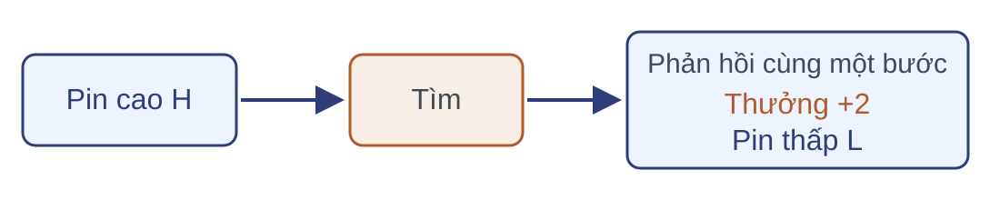
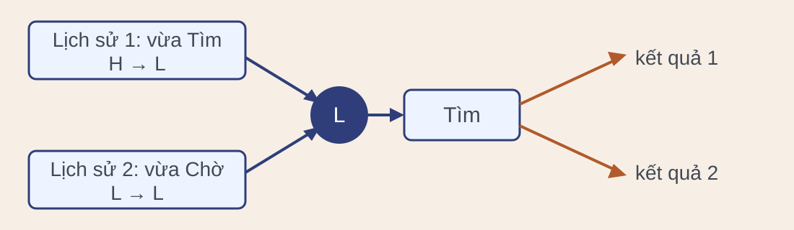
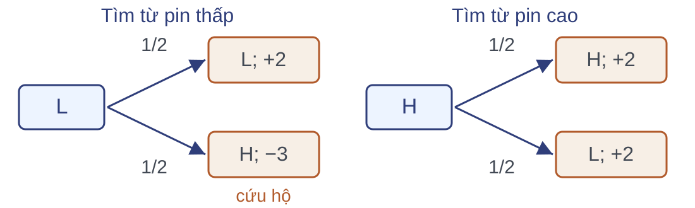
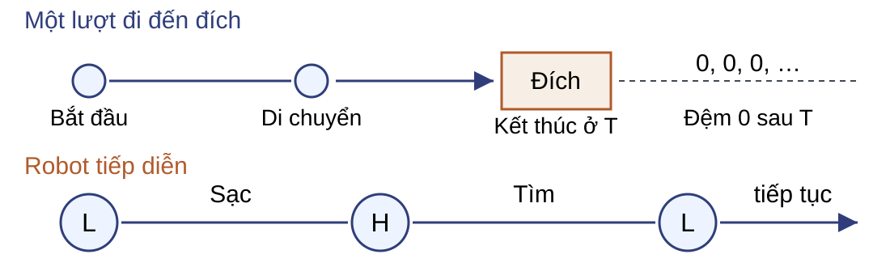
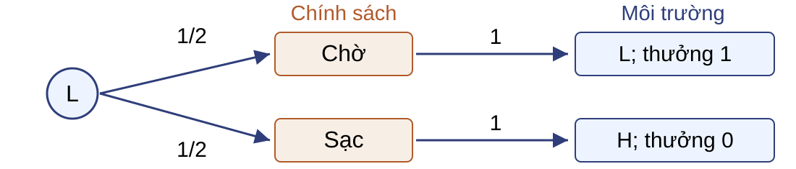
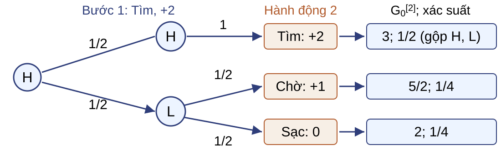
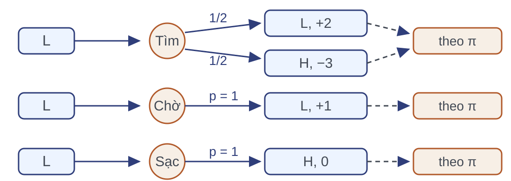
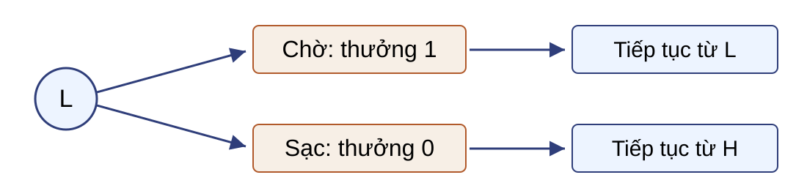
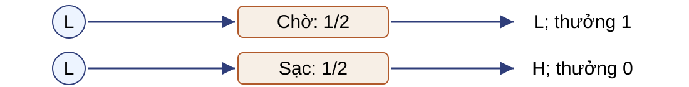
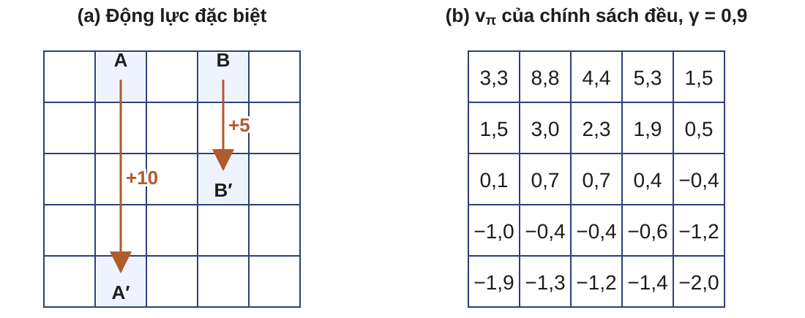

Quá trình quyết định Markov
Markov decision process (MDP) · Bài 03
Giá trị của một chính sách là nghiệm duy nhất của hệ Bellman do mô hình Markov và chính sách sinh ra.
Học tăng cường · Năm học 2026–2027, học kỳ 1
Trường Đại học Công nghệ, Đại học Quốc gia Hà Nội
Quá trình quyết định Markov (Markov decision process, MDP) mô tả môi trường bằng một hàm động lực chỉ phụ thuộc trạng thái và hành động hiện tại. Khi chính sách cố định, giá trị dài hạn của nó thỏa một hệ phương trình tuyến tính, mỗi trạng thái một phương trình. Ví dụ xuyên suốt là robot thu gom lon hai mức pin; kết quả số cuối cùng là $v_\pi(\mathrm H)=13/4$ và $v_\pi(\mathrm L)=7/4$.
Nguồn: Sutton và Barto (2018), chương 3; Bài giảng gốc (2025–2026), trang 28–58.
Tiên quyết và quy ước
Nhắc lại (Bài 02): tác tử (agent) chọn $A_t$, nhận phần thưởng (reward) $R_{t+1}$ và $S_{t+1}$.
Tính Markov (Markov property): biết $(S_t,A_t)$, quá khứ không đổi phân phối $(S_{t+1},R_{t+1})$.
Hàm động lực (dynamics function) $p$; chính sách dừng (stationary policy) $\pi$.
Lợi tức (return) $G_t=R_{t+1}+\gamma G_{t+1}$, $\lvert G_t\rvert\le\tfrac{M}{1-\gamma}$ khi $\lvert R_k\rvert\le M$, hệ số chiết khấu (discount factor) ${\gamma<1}$.
Giá trị trạng thái (state-value function) $v_\pi(s)=\mathbb E_\pi[G_t\mid S_t=s]$.
Năm kết quả này đã được phát biểu hình thức ở Bài 02 (ghi chú, Mục 2–4); cận ở đó viết bằng $R_{\max}$, ở đây bằng $M$. Hàm động lực $p(s',r\mid s,a)$ không mang chỉ số $t$ vì môi trường dừng. Định nghĩa giá trị nói giá trị là gì nhưng chưa cho cách tính khi không liệt kê được quỹ đạo. Phần mới của Bài 03: bộ MDP hữu hạn với quy tắc sinh quỹ đạo, mô hình của robot, giá trị hành động, phương trình Bellman và cách giải. Chữ "dừng" của môi trường và chính sách nghĩa là không đổi theo thời gian, khác với việc dừng một thuật toán.
Nguồn: ghi chú Bài 02, Mục 2–4; Sutton và Barto (2018), §3.1–3.5.
Tiên quyết và quy ước
Nhắc lại: xác suất có điều kiện, kỳ vọng toàn phần, hệ tuyến tính.
Ký hiệu: $t=0,1,2,\dots$; chữ hoa là biến ngẫu nhiên.
$\mathcal S$: trạng thái chưa kết thúc; $\mathcal S^+$ thêm trạng thái kết thúc; $\mathcal A(s)$, $\mathcal R$ hữu hạn.
$\Pr_\pi$, $\mathbb E_\pi$: hành động theo $\pi$, phản hồi theo $p$.
Robot: $\mathrm H$, $\mathrm L$ là pin cao, pin thấp; $\mathrm{tim},\mathrm{cho},\mathrm{sac}$ là Tìm, Chờ, Sạc.
Kỳ vọng toàn phần: $\mathbb E[X\mid B]=\sum_y\Pr(Y=y\mid B)\,\mathbb E[X\mid Y=y,B]$ khi $Y$ nhận hữu hạn giá trị. Ma trận vuông khả nghịch khi và chỉ khi hệ thuần nhất chỉ có nghiệm $0$. $\mathcal A(s)$ là tập hành động hợp lệ tại $s$; ở robot, Sạc chỉ hợp lệ ở pin thấp. $\mathcal R$ là tập giá trị phần thưởng. Quy ước chỉ số $R_{t+1}$ theo Sutton và Barto; một số tài liệu viết $R_t$. Tên hành động viết không dấu trong công thức.
Nguồn: ghi chú Bài 03, Kiến thức tiên quyết và Bảng ký hiệu; Sutton và Barto (2018), §3.1, tr. 48.
Mục tiêu học tập
Kiểm tra tính Markov; lập bộ MDP hữu hạn và bảng $p(s',r\mid s,a)$.
Tính lợi tức chiết khấu và cận của lợi tức.
Phân biệt mô hình (model), chính sách, $v_\pi$, $q_\pi$; tính kỳ vọng trên cây hai bước.
Chứng minh phương trình Bellman kỳ vọng (Bellman expectation equation), chỉ ra bước dùng tính Markov.
Lập, giải và kiểm tra hệ $(I-\gamma P_\pi)v=r_\pi$ của một chính sách cho trước.
Mỗi mục tiêu có bài kiểm tra được trong tệp bài tập; số trong ngoặc là bài chỉ có trong ghi chú bài giảng. Mục tiêu 1 ứng với Bài tập 03.1, 03.2, 03.15, 03.22, 03.24; mục tiêu 2 với 03.3, 03.18, 03.20, 03.23 (03.10, 03.12); mục tiêu 3 với 03.4, 03.5, 03.16, 03.17; mục tiêu 4 với 03.6, 03.7, 03.17, 03.19, 03.24, 03.25 (03.11); mục tiêu 5 với 03.8, 03.20, 03.21, 03.23, 03.24, 03.25 (03.9, 03.13, 03.14). Bài toán của bài là bài toán dự đoán: chính sách cho trước, chỉ cần đánh giá; việc chọn chính sách tốt hơn thuộc Bài 04.
Nguồn: ghi chú bài giảng Bài 03, mục Mục tiêu học tập; tệp bài tập Bài 03, dòng "Mức độ" của từng bài.
Nội dung
Mở đầu
Trạng thái Markov và mô hình môi trường
Lợi tức chiết khấu
Chính sách và hàm giá trị
Phương trình Bellman kỳ vọng
Đánh giá chính sách bằng hệ tuyến tính
Tổng kết và chuyển tiếp
Đọc trước: Sutton và Barto (2018), §3.1–3.5.
Thứ tự các mạch theo chương 3 của Sutton và Barto: mô hình môi trường, rồi mục tiêu gộp phần thưởng, rồi chính sách và giá trị, rồi phương trình Bellman. Chuỗi Markov và quá trình phần thưởng Markov ở mạch 6 là trường hợp cố định chính sách của MDP; mọi đối tượng sau đều suy ra từ hàm động lực và chính sách.
Nguồn: Sutton và Barto (2018), §3.1–3.5, §4.1; Bài giảng gốc (2025–2026), trang 28–58.
Vấn đề trung tâm
Tính giá trị dài hạn của một chính sách khi phản hồi ngẫu nhiên.
Trạng thái Markov, $p$ dừng: bảng $p(s',r\mid s,a)$ mô tả môi trường.
Phần thưởng bị chặn, $\gamma<1$: lợi tức hữu hạn.
Cố định $\pi$ Markov dừng: $v_\pi$, $q_\pi$ là kỳ vọng hữu hạn.
MDP hữu hạn, $\pi$ Markov dừng: $v_\pi$ thỏa hệ Bellman.
Cùng giả thiết, $\gamma<1$ làm $I-\gamma P_\pi$ khả nghịch: $v_\pi$ là nghiệm duy nhất.
Ở pin thấp, Chờ cho ngay phần thưởng $1$, còn Sạc cho $0$ nhưng đưa robot về pin cao, nơi Tìm cho $2$. Muốn so sánh hai lựa chọn phải có một con số tổng hợp toàn bộ tương lai. Mỗi dòng đánh số nêu điều kiện của một mạch và kết quả mạch đó giao cho mạch sau; dòng cuối dẫn tới kết quả số của bài với robot dưới chính sách chia đều tại pin thấp: $v_\pi(\mathrm H)=13/4$, $v_\pi(\mathrm L)=7/4$.
Nguồn: ghi chú bài giảng Bài 03, phần mở Mục 1 và hình cấu trúc chương.
2. Trạng thái Markov và mô hình môi trườngMuốn tính trước hậu quả của hành động, phải mô tả phản hồi một bước bằng xác suất theo cặp trạng thái–hành động.
Lịch sử · Tính Markov · Hàm động lực · Thưởng kỳ vọng · Bộ MDP
Tính Markov và hàm động lực $p(s',r\mid s,a)$ đã được định nghĩa ở Bài 02 cho môi trường dừng. Phần mới gồm ba việc: kiểm tính Markov trên mọi lịch sử có xác suất dương, kèm một phản ví dụ và cách sửa; lập bảng $p$ của robot; thêm quy tắc sinh quỹ đạo để có bộ MDP hữu hạn. Bộ MDP của robot là dữ liệu cho mọi phép tính ở các mạch sau.
Nguồn: Sutton và Barto (2018), §3.1, tr. 47–53; Bài giảng gốc (2025–2026), trang 29, 49.
Lựa chọn của robot ở pin thấp
Nhắc lại (Bài 02): tính Markov và hàm động lực $p$ của môi trường dừng.
Nhu cầu: điều kiện để bảng $p$ của robot đủ mô tả môi trường, và quy tắc sinh quỹ đạo (trajectory).
Chờ: nhận $1$, giữ $\mathrm L$. Sạc: nhận $0$, về $\mathrm H$.
Tìm: nhận $2$ và giữ $\mathrm L$, hoặc cứu hộ, nhận $-3$, về $\mathrm H$; mỗi khả năng $\tfrac12$.
Robot thu gom lon rỗng trong văn phòng; tác tử chỉ phân biệt hai mức pin. Hậu quả của một hành động có thể phụ thuộc cả quá khứ; bảng theo trạng thái chỉ đủ khi trạng thái giữ đủ thông tin. Ở pin cao, robot Tìm hoặc Chờ: Tìm cho $2$ và giữ pin cao hoặc xuống pin thấp, mỗi khả năng $1/2$; Chờ cho $1$ và giữ pin cao. Cứu hộ sạc lại pin ngay trong bước đó. Robot hoạt động liên tục; cứu hộ và Sạc không dừng công việc. Một bước là một chu kỳ quyết định, không nhất thiết bằng nhau theo thời gian thực. Các mức phần thưởng Tìm $2$, Chờ $1$ là số liệu sư phạm tự xây dựng; hai tham số xác suất của ví dụ gốc được chọn bằng $1/2$.
Nguồn: Sutton và Barto (2018), ví dụ 3.3, tr. 52–53; ghi chú Bài 03, Ví dụ 03.1.
Quỹ đạo và lịch sử
Ví dụ. Tại $t$ robot ở pin cao, chọn Tìm, nhận $2$ và xuống pin thấp.

$$(S_t,\,A_t,\,R_{t+1},\,S_{t+1})=(\mathrm H,\ \mathrm{tim},\ 2,\ \mathrm L)$$
Định nghĩa. Quỹ đạo là dãy $S_0,A_0,R_1,S_1,A_1,R_2,\dots$; lịch sử (history) $H_t=(S_0,A_0,R_1,\dots,S_t)$ là đoạn đầu dừng ở $S_t$.
Trạng thái và hành động mang chỉ số $t$ vì có trước khi robot hành động; phần thưởng và trạng thái mới mang chỉ số $t+1$ vì môi trường trả về chúng cùng lúc. Nếu bước kế tiếp robot ở $\mathrm L$ chọn Chờ, bản ghi tiếp theo là $(\mathrm L,\mathrm{cho},1,\mathrm L)$; hai bản ghi nối nhau ở $S_{t+1}=\mathrm L$. Lịch sử chưa chứa $A_t$ vì đó là thông tin có trước khi chọn hành động tại $t$. Bản ghi là một mẫu đã xảy ra, chưa phải quy luật xác suất.
Nguồn: Sutton và Barto (2018), (3.1), tr. 48; ghi chú Bài 03, Ví dụ 03.2 và Định nghĩa 03.1.
Hai lịch sử, cùng trạng thái hiện tại
Trực quan. Trạng thái tóm tắt phần quá khứ có ảnh hưởng tới phản hồi sắp tới.

Lịch sử $(\mathrm H,\mathrm{tim},2,\mathrm L)$ và $(\mathrm L,\mathrm{cho},1,\mathrm L)$ cùng kết thúc ở $\mathrm L$.
Ở cả hai, Tìm cho $(\mathrm L,2)$ hoặc $(\mathrm H,-3)$, mỗi cặp xác suất $\tfrac12$.
Robot thứ nhất vừa Tìm từ pin cao và xuống pin thấp; robot thứ hai vừa Chờ ở pin thấp. Theo mô hình, phản hồi của Tìm từ pin thấp chỉ phụ thuộc mức pin, nên hai lịch sử khác nhau cho cùng một phân phối phản hồi; ở cả hai, hai xác suất cộng lại bằng $1$. Mức pin là trạng thái đủ thông tin trong mô hình lý tưởng này. Một robot thật có thể cần thêm thông tin, chẳng hạn vị trí, nếu vị trí làm thay đổi cơ hội gặp lon.
Nguồn: Sutton và Barto (2018), §3.1, tr. 49; ghi chú Bài 03, Ví dụ 03.3.
Tính Markov
Định nghĩa. Trạng thái $S_t$ có tính Markov nếu
$$\begin{aligned}&\Pr(S_{t+1}=s',R_{t+1}=r\mid H_t=h_t,A_t=a)\\&\quad=\Pr(S_{t+1}=s',R_{t+1}=r\mid S_t=s,A_t=a)\end{aligned}$$
với mọi $t$, mọi lịch sử $h_t$ kết thúc ở $s$ và mọi $a$ có ${\Pr(H_t=h_t,A_t=a)>0}$ (Định nghĩa 03.2).
Ý nghĩa: khi đã biết $(S_t,A_t)$, lịch sử không làm thay đổi phân phối phản hồi.
Vế trái dùng toàn bộ lịch sử, vế phải chỉ dùng trạng thái cuối và hành động hiện tại; đẳng thức phải đúng với mọi lịch sử có xác suất dương. Hai lịch sử kết thúc ở $\mathrm L$, sau Tìm từ pin cao và sau Chờ ở pin thấp, là một trường hợp của đẳng thức. Định nghĩa trùng phát biểu của Bài 02; điều kiện xác suất dương được dùng lại trong chứng minh phương trình Bellman. Lịch sử vẫn ảnh hưởng tới tương lai, nhưng mọi ảnh hưởng đã được nén vào $S_t$. Tính Markov không cho biết các xác suất bằng bao nhiêu, và không nói phản hồi là tất định: Tìm từ pin thấp vẫn có hai kết quả ngẫu nhiên.
Nguồn: Sutton và Barto (2018), §3.1, tr. 49; Bài giảng gốc (2025–2026), trang 29.
Ví dụ: trạng thái thiếu phòng làm việc
Robot ở $\mathrm L$ chỉ Chờ, luân phiên phòng 1 và 2; phòng đầu ngẫu nhiên.
Phòng 1 cho $1$, phòng 2 cho $0$; trạng thái chỉ ghi mức pin.
$H_1=(\mathrm L,\mathrm{cho},1,\mathrm L)$: $R_1=1$ nên robot sang phòng 2; ${\Pr(R_2=1\mid H_1,A_1=\mathrm{cho})=0}$.
$H_1=(\mathrm L,\mathrm{cho},0,\mathrm L)$: robot sang phòng 1, xác suất đó bằng $1$.
Diễn giải: cùng $\mathrm L$, hai xác suất khác nhau; mức pin không có tính Markov.
Số liệu sư phạm tự xây dựng. Phòng lúc $t=0$ là phòng 1 hoặc phòng 2, mỗi phòng xác suất $1/2$, nên mỗi lịch sử có xác suất $1/2$ và thuộc phạm vi của định nghĩa. Phần thưởng $R_1$ cho biết phòng lúc $t=0$, do đó cho biết phòng lúc $t=1$. Vế phải của định nghĩa là một số duy nhất, không thể bằng cả $0$ và $1$. Sửa: lấy trạng thái là cặp (mức pin, phòng). Tính Markov thuộc về biểu diễn trạng thái, không thuộc về hệ vật lý.
Nguồn: ghi chú Bài 03, Ví dụ 03.4 và Nhận xét 03.3; Sutton và Barto (2018), tr. 49.
Bài tập: trạng thái của robot
Câu hỏi: robot chỉ ở pin cao, mỗi bước chọn Tìm hoặc Chờ với xác suất $\tfrac12$.
Vị trí cố định suốt đời: gần cửa hoặc xa cửa, mỗi khả năng $\tfrac12$.
Chờ được $1$; Tìm gần cửa được $2$, xa cửa được $2$ hoặc $0$ cùng xác suất.
Trạng thái không ghi vị trí. Tính ${\Pr(R_2=0\mid H_1,A_1=\mathrm{tim})}$ cho ${H_1=(\mathrm H,\mathrm{tim},0,\mathrm H)}$ và $(\mathrm H,\mathrm{cho},1,\mathrm H)$.
Bài tập kiểm tra khả năng nhận ra trạng thái không có tính Markov qua hai lịch sử. Gợi ý: phần thưởng $0$ chỉ xảy ra ở vị trí xa cửa; tính xác suất robot ở xa cửa khi biết từng lịch sử, rồi nhân với xác suất nhận $0$ khi Tìm ở xa cửa. Hai lịch sử có xác suất $1/8$ và $1/2$, đều dương, nên thuộc phạm vi của định nghĩa tính Markov.
Nguồn: ghi chú Bài 03, Bài tập 03.1.
Bài tập: trạng thái của robot
Lời giải: phần thưởng $0$ chỉ có khi Tìm ở xa cửa, với xác suất $\tfrac12$.
$H_1=(\mathrm H,\mathrm{tim},0,\mathrm H)$: robot chắc chắn ở xa cửa; xác suất bằng $\tfrac12$.
$H_1=(\mathrm H,\mathrm{cho},1,\mathrm H)$: Chờ không tiết lộ vị trí; xác suất $\tfrac12\cdot\tfrac12+\tfrac12\cdot0=\tfrac14$.
Cùng $\mathrm H$, cùng Tìm, $\tfrac12\ne\tfrac14$: mức pin không có tính Markov; thêm vị trí vào trạng thái.
Ở lịch sử thứ nhất, phần thưởng $0$ sau Tìm chỉ xảy ra ở xa cửa, nên vị trí đã lộ. Ở lịch sử thứ hai, Chờ cho $1$ ở cả hai vị trí, nên xác suất ở xa cửa vẫn là $1/2$ như phân phối đầu. Vị trí cố định suốt đời, nên phần thưởng quá khứ mang thông tin về phần thưởng tương lai. Lỗi thường gặp là coi vị trí được rút lại ở mỗi bước; khi đó mức pin lại có tính Markov. Với trạng thái là cặp (mức pin, vị trí), hai xác suất trở thành $1/2$ ở xa cửa và $0$ ở gần cửa, không phụ thuộc lịch sử.
Nguồn: ghi chú Bài 03, lời giải Bài tập 03.1.
Ví dụ: hai phản hồi của hành động Tìm
Nhờ tính Markov, phản hồi được liệt kê theo cặp $(s,a)$, kèm xác suất.

Mỗi phản hồi là một cặp (trạng thái kế tiếp, phần thưởng); phần thưởng cố định trên mỗi nhánh.
Một bản ghi như $(\mathrm H,\mathrm{tim},2,\mathrm L)$ không cho biết phản hồi đó xảy ra thường xuyên đến mức nào, cũng không cho biết những phản hồi khác. Trạng thái kế tiếp và phần thưởng được rút cùng nhau trong một bước, không có giả thiết độc lập: ở pin thấp, biết phần thưởng là $-3$ thì biết robot đã về pin cao. Cứu hộ được tính trọn trong một bước, không cộng thêm phần thưởng $2$. Một bản ghi là một mẫu; danh sách mọi phản hồi kèm xác suất là quy luật sinh ra các mẫu.
Nguồn: Sutton và Barto (2018), ví dụ 3.3, tr. 52–53.
Ví dụ: bảng phản hồi của robot
Hiện tại $s$ Hành động $a$ Kế tiếp $s'$ Phần thưởng $r$ Xác suất
$\mathrm H$ $\mathrm{tim}$ $\mathrm H$ $2$ $1/2$ $\mathrm H$ $\mathrm{tim}$ $\mathrm L$ $2$ $1/2$ $\mathrm H$ $\mathrm{cho}$ $\mathrm H$ $1$ $1$ $\mathrm L$ $\mathrm{tim}$ $\mathrm L$ $2$ $1/2$ $\mathrm L$ $\mathrm{tim}$ $\mathrm H$ $-3$ $1/2$ $\mathrm L$ $\mathrm{cho}$ $\mathrm L$ $1$ $1$ $\mathrm L$ $\mathrm{sac}$ $\mathrm H$ $0$ $1$
Mỗi nhóm $(s,a)$ có tổng xác suất $1$; cặp $(\mathrm H,\mathrm{sac})$ không hợp lệ.
Mỗi hàng là một phản hồi có xác suất dương của một cặp trạng thái–hành động hợp lệ. Năm cặp hợp lệ tạo năm nhóm hàng: nhóm $(\mathrm H,\mathrm{tim})$ và $(\mathrm L,\mathrm{tim})$ có hai hàng $1/2$; ba nhóm còn lại có một hàng xác suất $1$. Không có hàng nào cho $(\mathrm H,\mathrm{sac})$ vì Sạc không thuộc $\mathcal A(\mathrm H)$. Sutton và Barto chỉ cho thưởng kỳ vọng trên mỗi nhánh; giả thiết phần thưởng cố định trên mỗi nhánh được thêm để bảng xác định đầy đủ phân phối chung của $(s',r)$.
Nguồn: Sutton và Barto (2018), ví dụ 3.3, tr. 52–53; ghi chú Bài 03, Ví dụ 03.5.
Hàm động lực
Trực quan. Mỗi cặp $(s,a)$ có một phân phối trên các cặp $(s',r)$.
Định nghĩa. Hàm động lực là hàm $p$ thỏa, với mọi ${s\in\mathcal S}$, ${a\in\mathcal A(s)}$,
$$p(s',r\mid s,a)\ge0,\qquad\sum_{s'\in\mathcal S^+}\sum_{r\in\mathcal R}p(s',r\mid s,a)=1,$$
và $p(s',r\mid s,a)=\Pr(S_{t+1}=s',R_{t+1}=r\mid S_t=s,A_t=a)$ khi điều kiện có xác suất dương.
Giả thiết: các tập hữu hạn; trạng thái có tính Markov; $p$ không đổi theo $t$ (Định nghĩa 03.4).
Bài 02 đã định nghĩa hàm động lực cho môi trường dừng; ở đây định nghĩa thêm điều kiện xác suất dương và các tập hữu hạn. Hai đối số sau vạch điều kiện, $s$ và $a$, được cố định; hai đối số trước vạch, $s'$ và $r$, chạy trong tổng chuẩn hóa. Hàng thứ năm của bảng cho $p(\mathrm H,-3\mid\mathrm L,\mathrm{tim})=1/2$; bộ không có trong bảng có $p=0$, chẳng hạn $p(\mathrm H,2\mid\mathrm L,\mathrm{tim})=0$. Hàm $p$ không mang chỉ số $t$: tính dừng là giả thiết riêng, khác tính Markov; một robot có pin lão hóa có thể có trạng thái Markov nhưng hàm động lực đổi theo thời gian. Sutton và Barto viết $p$ với chỉ số $t-1$ và $t$; ở đây dịch sang $t$ và $t+1$.
Nguồn: Sutton và Barto (2018), (3.2)–(3.3), tr. 48–49; ghi chú Bài 03, Nhận xét 03.5.
Xác suất chuyển và thưởng kỳ vọng
Ví dụ. Cặp $(\mathrm L,\mathrm{tim})$ về $\mathrm H$ với xác suất $\tfrac12$, thưởng kỳ vọng $\tfrac12\cdot2+\tfrac12\cdot(-3)=-\tfrac12$.
Mệnh đề. Xác suất chuyển (state-transition probability) và thưởng kỳ vọng (expected reward) tính từ $p$ (Mệnh đề 03.6):
$$\begin{aligned}p(s'\mid s,a)&=\sum_{r\in\mathcal R}p(s',r\mid s,a),\\ r(s,a)&=\sum_{s'\in\mathcal S^+}\sum_{r\in\mathcal R}r\,p(s',r\mid s,a).\end{aligned}$$
Chứng minh. Cộng các hàng cùng $s'$; lấy trung bình $r$ theo xác suất của hàng.
Hai phép tính của ví dụ là phép cộng theo hàng của bảng với hai cách nhóm: nhóm các hàng có cùng trạng thái kế tiếp cho xác suất chuyển; lấy trung bình phần thưởng theo trọng số hàng cho thưởng kỳ vọng. Khi sự kiện điều kiện có xác suất dương, $r(s,a)=\mathbb E[R_{t+1}\mid S_t=s,A_t=a]$ và $\sum_{s'}p(s'\mid s,a)=1$. Chiều ngược lại không đúng: $p(s'\mid s,a)$ và $r(s,a)$ chưa đủ để dựng lại $p(s',r\mid s,a)$, vì $r(s,a)$ chỉ giữ trung bình. Hai rút gọn này đủ cho phương trình Bellman nhưng không đủ để mô phỏng phần thưởng. Thưởng kỳ vọng $-1/2$ của cặp $(\mathrm L,\mathrm{tim})$ là trung bình; mỗi lần Tìm ở $\mathrm L$ robot nhận $2$ hoặc $-3$.
Nguồn: Sutton và Barto (2018), (3.4)–(3.5), tr. 49.
Quá trình quyết định Markov hữu hạn
Định nghĩa. Quá trình quyết định Markov hữu hạn là bộ
$$\mathcal M=\bigl(\mathcal S^+,\ \{\mathcal A(s)\}_{s\in\mathcal S},\ \mathcal R,\ p\bigr)$$
với các tập hữu hạn, $p$ thỏa chuẩn hóa, và quỹ đạo sinh theo quy tắc (Định nghĩa 03.7)
$$\Pr(S_{t+1}=s',R_{t+1}=r\mid H_t=h_t,A_t=a)=p(s',r\mid s,a).$$
Ví dụ. Robot: $\mathcal S^+=\{\mathrm H,\mathrm L\}$, $\mathcal A(\mathrm H)=\{\mathrm{tim},\mathrm{cho}\}$, $\mathcal A(\mathrm L)=\{\mathrm{tim},\mathrm{cho},\mathrm{sac}\}$, $\mathcal R=\{-3,0,1,2\}$.
Mô hình của môi trường là $p$; hệ số chiết khấu $\gamma$ đứng ngoài $\mathcal M$.
Quy tắc sinh quỹ đạo đúng với mọi lịch sử $h_t$ kết thúc ở $s$ và mọi $a\in\mathcal A(s)$ có $\Pr(H_t=h_t,A_t=a)>0$; nó đặt cả tính Markov lẫn tính dừng vào định nghĩa. Robot không có trạng thái kết thúc, nên $\mathcal S^+=\mathcal S$, và $p$ là bảy hàng của bảng phản hồi. Bộ $\mathcal M$ chỉ mô tả môi trường, và đổi $\gamma$ không đổi $p$; bộ chưa nói hành động được chọn thế nào và chuỗi phần thưởng được gộp thế nào. Giáo trình Học máy thống kê viết bộ $\langle S,A,T,R,\gamma\rangle$, trong đó $T(s,a,s')$ ứng với $p(s'\mid s,a)$; ở đây $\gamma$ thuộc tiêu chuẩn đánh giá, theo Sutton và Barto.
Nguồn: Sutton và Barto (2018), §3.1, tr. 47–49; Bài giảng gốc (2025–2026), trang 49.
Bài tập: đọc hàm động lực của robot
Câu hỏi: bảng phản hồi của robot gồm
$(\mathrm H,\mathrm{tim})\to(\mathrm H,2)$ hoặc $(\mathrm L,2)$, mỗi nhánh $\tfrac12$; $(\mathrm H,\mathrm{cho})\to(\mathrm H,1)$;
$(\mathrm L,\mathrm{tim})\to(\mathrm L,2)$ hoặc $(\mathrm H,-3)$, mỗi nhánh $\tfrac12$;
$(\mathrm L,\mathrm{cho})\to(\mathrm L,1)$; $(\mathrm L,\mathrm{sac})\to(\mathrm H,0)$.
Lập bảng $p(\mathrm H\mid s,a)$, $p(\mathrm L\mid s,a)$, $r(s,a)$ cho năm cặp hợp lệ, rồi kiểm tra chuẩn hóa.
Bài tập kiểm tra việc dùng công thức xác suất chuyển và thưởng kỳ vọng trên một bảng phản hồi cụ thể. Gợi ý: mỗi cặp chỉ có một hoặc hai hàng; cộng các hàng có cùng trạng thái kế tiếp, và lấy trung bình phần thưởng theo xác suất hàng. Năm cặp hợp lệ là năm hàng của bảng cần lập.
Nguồn: ghi chú Bài 03, Bài tập 03.2.
Bài tập: đọc hàm động lực của robot
Lời giải: theo công thức xác suất chuyển và thưởng kỳ vọng,
$(s,a)$ $p(\mathrm H\mid s,a)$ $p(\mathrm L\mid s,a)$ $r(s,a)$
$(\mathrm H,\mathrm{tim})$ $1/2$ $1/2$ $\tfrac12\cdot2+\tfrac12\cdot2=2$ $(\mathrm H,\mathrm{cho})$ $1$ $0$ $1$ $(\mathrm L,\mathrm{tim})$ $1/2$ $1/2$ $\tfrac12\cdot2+\tfrac12\cdot(-3)=-\tfrac12$ $(\mathrm L,\mathrm{cho})$ $0$ $1$ $1$ $(\mathrm L,\mathrm{sac})$ $1$ $0$ $0$
Mỗi hàng có $p(\mathrm H\mid s,a)+p(\mathrm L\mid s,a)=1$, nên chuẩn hóa thỏa ở cả năm cặp.
Ở cặp $(\mathrm H,\mathrm{tim})$, hai nhánh có cùng phần thưởng $2$ nên thưởng kỳ vọng bằng $2$ dù trạng thái kế tiếp ngẫu nhiên. Ở cặp $(\mathrm L,\mathrm{tim})$, thưởng kỳ vọng $-1/2$ là giá trị robot không bao giờ nhận đúng. Hai cột xác suất chuyển cộng theo hàng bằng $1$, đúng phần cuối của mệnh đề về xác suất chuyển. Số hạng tự do $2$ của hàng đầu sẽ xuất hiện lại trong phương trình Bellman tại pin cao.
Nguồn: ghi chú Bài 03, lời giải Bài tập 03.2.
3. Lợi tức chiết khấuMuốn so sánh hai chuỗi phần thưởng, phải gộp chúng thành một số hữu hạn có trọng số theo thời gian.
Lượt · Nhiệm vụ tiếp diễn · Hệ số chiết khấu · Lợi tức · Cận của lợi tức
Bộ MDP của robot mô tả trọn một bước nhưng chưa so sánh được hậu quả lâu dài. Lợi tức chiết khấu cùng hệ thức truy hồi và cận của nó đã có ở Bài 02 (Mệnh đề 02.13). Phần mới là áp chúng vào robot: quy ước trạng thái hấp thụ để viết chung nhiệm vụ có kết thúc và nhiệm vụ tiếp diễn, và cận $\lvert G_t\rvert\le6$ trên mọi quỹ đạo của robot. Cận này bảo đảm mọi kỳ vọng ở mạch chính sách và giá trị tồn tại.
Nguồn: Sutton và Barto (2018), §3.3–3.4, tr. 54–57; Bài giảng gốc (2025–2026), trang 36–38.
Lợi tức của robot
Nhắc lại (Bài 02): $G_t=R_{t+1}+\gamma R_{t+2}+\gamma^2R_{t+3}+\cdots$.
Nhu cầu: Chờ mãi cho $1+1+\cdots=\infty;$ cần quy ước chung cho chuỗi hữu hạn và vô hạn, và cận cho robot.
Từ $\mathrm L$, $\gamma=\tfrac12$: Sạc, Tìm, Tìm cho $(0,2,2)$; Chờ ba lần cho $(1,1,1)$.
$$0+\tfrac12\cdot2+\tfrac14\cdot2=\tfrac32,\qquad 1+\tfrac12\cdot1+\tfrac14\cdot1=\tfrac74.$$
Diễn giải: tổng không trọng số $4>3$, nhưng tổng có trọng số $\tfrac32<\tfrac74$.
Bài 02 đã định nghĩa lợi tức và chứng minh hệ thức truy hồi cùng cận của nó; trọng số $\gamma^k$ làm phần thưởng sớm nặng hơn phần thưởng muộn. Trên hai dãy ba bước của robot, trọng số đảo thứ hạng: phần thưởng $0$ của dãy thứ nhất rơi vào bước có trọng số lớn nhất. Dãy $(0,2,2)$ là một đường có xác suất dương; lần Tìm đầu từ pin cao cũng có thể đưa robot xuống pin thấp. Cộng thẳng không dùng được cho nhiệm vụ tiếp diễn: Chờ mãi cho $1+1+1+\cdots$, và mọi cách hành động có phần thưởng dương đều cho tổng vô hạn. Hai con số chỉ so sánh hai đoạn ba bước, chưa cho biết cách hành động nào tốt hơn về lâu dài.
Nguồn: ghi chú Bài 02, Mục 4; ghi chú Bài 03, Ví dụ 03.7; Sutton và Barto (2018), (3.8), tr. 55.
Lượt và hai loại nhiệm vụ
Định nghĩa. Nhiệm vụ có kết thúc (episodic task) chia thành các lượt (episode).
Mỗi lượt dừng khi tới trạng thái kết thúc (terminal state) tại thời điểm $T<\infty$.
Nhiệm vụ tiếp diễn (continuing task) không chia lượt; quy ước $T=\infty$ và $\mathcal S^+=\mathcal S$.

Ví dụ. Robot là nhiệm vụ tiếp diễn: cứu hộ và Sạc chỉ đổi mức pin.
Tổng có trọng số cần biết chuỗi phần thưởng dài bao nhiêu: mê cung của Bài 02 kết thúc khi tác tử tới đích, còn robot không có điểm dừng tự nhiên; với $T=\infty$, tổng chỉ hữu hạn khi $\gamma<1$. Thời điểm kết thúc $T$ là biến ngẫu nhiên và có thể khác nhau giữa các lượt. Một lần đi mê cung của Bài 02 hay một lần giữ cột trong CartPole là nhiệm vụ có kết thúc. Kết thúc một lượt là sự kiện của môi trường, khác việc dừng một thuật toán học chạy qua nhiều lượt. Với nhiệm vụ có kết thúc, $\mathcal S$ chỉ gồm trạng thái chưa kết thúc và $\mathcal S^+$ thêm các trạng thái kết thúc.
Nguồn: Sutton và Barto (2018), §3.3–3.4, tr. 54–57; ghi chú Bài 03, Định nghĩa 03.8.
Lợi tức chiết khấu
Định nghĩa. Với hệ số chiết khấu $\gamma\in[0,1]$ và $t\lt T$, lợi tức từ $t$ là
$$G_t=\sum_{k=t+1}^{T}\gamma^{\,k-t-1}R_k=R_{t+1}+\gamma R_{t+2}+\gamma^2R_{t+3}+\cdots$$
Quy ước $G_T=0$; trường hợp $T=\infty$ chỉ dùng với $\gamma<1$ (Định nghĩa 03.9).
Nhận xét. Đặt $R_k=0$ với $k>T$ (trạng thái hấp thụ), mọi nhiệm vụ có dạng
$$G_t=\sum\nolimits_{j=0}^{\infty}\gamma^{\,j}R_{t+j+1}.$$
Phần thưởng đến sau $k$ bước nữa, $R_{t+k+1}$, mang trọng số $\gamma^k$; số hạng đầu là $R_{t+1}$ với trọng số $1$. Lợi tức là biến ngẫu nhiên, vì mỗi quỹ đạo cho một dãy phần thưởng khác. Định nghĩa trùng lợi tức của Bài 02; phần mới là quy ước trạng thái hấp thụ. Với $\gamma=1/2$, ba số hạng đầu là phép tính trên hai dãy phần thưởng ba bước của robot, nên $3/2$ và $7/4$ là lợi tức cắt sau ba bước. Quy ước $G_T=0$ nói sau khi kết thúc không còn phần thưởng; $R_T$ vẫn nằm trong $G_{T-1}$. Trạng thái hấp thụ chỉ chuyển về chính nó với phần thưởng $0$ và một hành động giả; phép đệm là quy ước trong một lượt.
Nguồn: Sutton và Barto (2018), (3.7)–(3.8), (3.11), tr. 54–57; ghi chú Bài 03, Nhận xét 03.10.
Cận của lợi tức
Mệnh đề. Nếu $\lvert R_k\rvert\le M$ với mọi $k$ và $0\le\gamma<1$ thì trên mọi quỹ đạo (Mệnh đề 03.11)
$$\lvert G_t\rvert\le\sum_{j\ge0}\gamma^j\lvert R_{t+j+1}\rvert\le\frac{M}{1-\gamma}.$$
Chứng minh. Bất đẳng thức tam giác, rồi tổng cấp số nhân công bội $\gamma<1$.
Ví dụ. Robot: $M=3$ và $\gamma=\tfrac12$, nên $-6\le G_t\le6$ trên mọi quỹ đạo.
Mệnh đề đã có ở Bài 02 (Mệnh đề 02.13); ở đây dùng cho MDP hữu hạn. Chờ mãi với $\gamma=1/2$ cho $1+\tfrac12+\tfrac14+\cdots=2$; với $\gamma=1$ tổng phân kỳ. Chuỗi trội $\sum_j M\gamma^j$ hội tụ tới $M/(1-\gamma)$, nên chuỗi lợi tức hội tụ tuyệt đối. Mỗi giả thiết có phản ví dụ: bỏ $\gamma<1$, robot luôn Chờ có lợi tức phân kỳ dù $M=1$; bỏ phần thưởng bị chặn, dãy $R_{t+j+1}=2^j$ với $\gamma=1/2$ cho mọi số hạng bằng $1$. Cận đúng trên từng quỹ đạo nhưng không đạt được ở robot: $G_t=6$ cần phần thưởng $3\notin\mathcal R$ ở mọi bước; $G_t=-6$ cần $-3$ ở mọi bước, nhưng sau cứu hộ robot ở $\mathrm H$, nơi mọi phần thưởng dương. Với nhiệm vụ có kết thúc, phép đệm $0$ cho cùng cận. Với CartPole, phần thưởng $+1$ và $\gamma=0{,}99$ cho cận $100$.
Nguồn: Sutton và Barto (2018), tr. 55; ghi chú Bài 03, Mệnh đề 03.11 và Ví dụ 03.8.
Bài tập: lợi tức và cận của robot
Câu hỏi: từ $\mathrm L$, robot Tìm và được $2$, vẫn ở $\mathrm L$.
Tìm lần nữa thì bị cứu hộ, nhận $-3$ và về $\mathrm H$; rồi Chờ, nhận $1$.
(a) Xác định nhiệm vụ có kết thúc tại lần cứu hộ hay không.
(b) Tính $R_1+\gamma R_2+\gamma^2R_3$ với $\gamma=\tfrac12$ và với $\gamma=0$.
(c) Với $\gamma=\tfrac12$ và $\mathcal R=\{-3,0,1,2\}$, tìm khoảng chứa $G_0$.
Bài tập kiểm tra ba việc: phân loại nhiệm vụ, tính lợi tức cắt và dùng cận của lợi tức cho phần đuôi. Gợi ý: câu (a) dùng định nghĩa lượt; câu (c) chặn phần đuôi $\sum_{j\ge3}\gamma^jR_{j+1}$ theo cùng lập luận của mệnh đề cận, với thừa số $\gamma^3$. Ba phần thưởng đầu là $(R_1,R_2,R_3)=(2,-3,1)$.
Nguồn: ghi chú Bài 03, Bài tập 03.3.
Bài tập: lợi tức và cận của robot
Lời giải: (a) Không: robot là nhiệm vụ tiếp diễn; cứu hộ chỉ đổi trạng thái.
(b) $\gamma=\tfrac12$: $2-\tfrac32+\tfrac14=\tfrac34$. $\gamma=0$: chỉ còn $R_1=2$.
(c) Phần đuôi có trị tuyệt đối $\le\gamma^3\cdot\dfrac{M}{1-\gamma}=\tfrac18\cdot6=\tfrac34$.
Do đó $G_0\in\bigl[\tfrac34-\tfrac34,\ \tfrac34+\tfrac34\bigr]=\bigl[0,\tfrac32\bigr]$, nằm trong $[-6,6]$.
Với $\gamma=0$, mục tiêu là cận thị (myopic): chỉ phần thưởng ngay sau hành động được tính; ở robot, mục tiêu này xếp Chờ trên Sạc tại pin thấp. Phần đuôi bắt đầu từ $R_4$, mang trọng số $\gamma^3=1/8$, và mỗi phần thưởng có trị tuyệt đối không quá $M=3$. Khoảng $[0,3/2]$ hẹp hơn cận $[-6,6]$ vì ba phần thưởng đầu đã biết. Lỗi thường gặp là coi cận $6$ là giá trị của lợi tức.
Nguồn: ghi chú Bài 03, lời giải Bài tập 03.3 và Nhận xét 03.12.
4. Chính sách và hàm giá trịMuốn lấy kỳ vọng của lợi tức, phải cố định quy tắc chọn hành động ở mọi trạng thái.
Chính sách Markov dừng · Xác suất quỹ đạo · Giá trị trạng thái · Giá trị hành động
Lợi tức có hai nguồn ngẫu nhiên: phản hồi của môi trường, mô tả bằng bảng $p$, và lựa chọn của robot. Giá trị trạng thái $v_\pi(s)=\mathbb E_\pi[G_t\mid S_t=s]$ đã có ở Bài 02 cho chính sách dừng; phần mới gồm chính sách Markov dừng như quy tắc sinh hành động, công thức xác suất của mọi đoạn quỹ đạo, $v_\pi$ định nghĩa trên quá trình xuất phát tại $s$, và giá trị hành động $q_\pi$. Hai hàm này là ẩn số của phương trình Bellman.
Nguồn: Sutton và Barto (2018), §3.5, tr. 58; Bài giảng gốc (2025–2026), trang 39, 52–53.
Ví dụ: chính sách chia đều tại pin thấp
Nhắc lại (Bài 02): $v_\pi(s)=\mathbb E_\pi[G_t\mid S_t=s]$ cần một chính sách cố định.
Nhu cầu: quy tắc chọn hành động theo xác suất, dùng chung ở mọi thời điểm.
Trạng thái $\mathrm{tim}$ $\mathrm{cho}$ $\mathrm{sac}$
$\mathrm H$ $1$ $0$ — $\mathrm L$ $0$ $1/2$ $1/2$
Ô "—": hành động không hợp lệ; ô $0$: hành động hợp lệ nhưng không được chọn.
Ở $\mathrm H$ robot luôn Tìm; ở $\mathrm L$ robot Chờ hoặc Sạc, mỗi hành động $1/2$, không bao giờ Tìm. Mỗi hàng là một phân phối trên các hành động hợp lệ của trạng thái đó: hàng $\mathrm H$ có $1+0=1$, hàng $\mathrm L$ có $0+\tfrac12+\tfrac12=1$. Ở pin cao quy tắc là tất định, ở pin thấp là ngẫu nhiên; một chính sách có thể mang cả hai tính chất. Đây là số liệu sư phạm tự xây dựng; quy tắc được giữ cố định trong phần còn lại của bài cùng với $\gamma=1/2$, và chưa có khẳng định nào rằng nó tốt.
Nguồn: ghi chú Bài 03, Ví dụ 03.9; Bài giảng gốc (2025–2026), trang 52.
Chính sách Markov dừng
Trực quan. Chính sách rút hành động, sau đó môi trường rút phản hồi.

Định nghĩa. Chính sách Markov dừng là hàm $\pi$ gán mỗi $s\in\mathcal S$ một phân phối $\pi(\cdot\mid s)$ trên $\mathcal A(s)$.
Tác tử theo $\pi$ nếu $\Pr(A_t=a\mid H_t=h_t)=\pi(a\mid s)$ với mọi $h_t$ kết thúc ở $s$, ${\Pr(H_t=h_t)>0}$.
"Markov" nghĩa là xác suất chọn hành động chỉ phụ thuộc trạng thái hiện tại; "dừng" nghĩa là cùng hàm $\pi$ được dùng ở mọi thời điểm. Chính sách xác định (deterministic policy) là trường hợp mỗi $\pi(\cdot\mid s)$ dồn xác suất $1$ vào một hành động. Chính sách là quy luật của tác tử, $p$ là quy luật của môi trường: đổi chính sách không đổi bảng $p$, nhưng đổi xác suất của mọi quỹ đạo. Khi cần, $\mathbb E_\pi$ còn chỉ định phân phối đầu $\mu$ của $S_0$.
Nguồn: Sutton và Barto (2018), §3.5, tr. 58; ghi chú Bài 03, Định nghĩa 03.13.
Xác suất của một đoạn quỹ đạo
Mệnh đề. Với $\pi$ Markov dừng, xác suất của $K$ bộ $(a,r,s')$ tiếp theo khi biết $H_t=h_t$, ${\Pr(H_t=h_t)>0}$, là (Mệnh đề 03.14)
$$\prod_{i=0}^{K-1}\pi(a_{t+i}\mid s_{t+i})\,p(s_{t+i+1},r_{t+i+1}\mid s_{t+i},a_{t+i}).$$
Chứng minh. Quy tắc nhân và quy nạp theo $K$.
Ví dụ. Từ $\mathrm H$: Tìm tới $(\mathrm L,2)$, Sạc tới $(\mathrm H,0)$ có xác suất $1\cdot\tfrac12\cdot\tfrac12\cdot1=\tfrac14$.
Mỗi thừa số là một xác suất có điều kiện, không có giả thiết hành động độc lập với phản hồi; hai giả thiết Markov, của chính sách và của trạng thái, rút gọn mỗi thừa số về $\pi$ hoặc $p$. Vế phải không phụ thuộc phần lịch sử trước $s_t$, không phụ thuộc $t$ và không phụ thuộc phân phối đầu. Với nhiệm vụ có kết thúc, đoạn quỹ đạo có thể vượt quá thời điểm kết thúc; khi đó dùng quy ước trạng thái hấp thụ với một hành động giả xác suất $1$.
Nguồn: ghi chú Bài 03, Mệnh đề 03.14; Sutton và Barto (2018), §3.5.
Ví dụ: kỳ vọng hai bước từ pin cao
Nhu cầu: một số cho mỗi trạng thái; bắt đầu từ hai bước đầu của lợi tức.
Chính sách chia đều tại pin thấp, $\gamma=\tfrac12$, từ $\mathrm H$; tính kỳ vọng của $G_0^{[2]}=R_1+\gamma R_2$.

$$\mathbb E_\pi\bigl[G_0^{[2]}\mid S_0=\mathrm H\bigr]=\tfrac12\cdot3+\tfrac14\cdot\tfrac52+\tfrac14\cdot2=\tfrac{21}{8}.$$
Theo tuyến tính: $\mathbb E_\pi[R_1]+\gamma\,\mathbb E_\pi[R_2]=2+\tfrac12\cdot\tfrac54=\tfrac{21}8$.
Ở $\mathrm H$, chính sách chọn Tìm với xác suất $1$, nên $R_1=2$ và $S_1$ là $\mathrm H$ hoặc $\mathrm L$, mỗi trạng thái $1/2$. Nhánh $S_1=\mathrm H$: lại Tìm, $R_2=2$, giá trị $3$, xác suất $1/2$; nhãn "gộp H, L" gộp hai trạng thái kế tiếp cùng cho $R_2=2$. Xác suất mỗi nhánh là tích các thừa số $\pi$ và $p$ theo công thức xác suất đoạn quỹ đạo: nhánh Chờ có xác suất $\tfrac12\cdot\tfrac12=\tfrac14$, giá trị $5/2$; nhánh Sạc có xác suất $1/4$, giá trị $2$. Trong phép kiểm theo tuyến tính, $\mathbb E_\pi[R_2]=\tfrac12\cdot2+\tfrac12\cdot\tfrac12=\tfrac54$. Số $21/8$ chỉ gồm hai bước đầu.
Nguồn: ghi chú Bài 03, Ví dụ 03.10.
Giá trị trạng thái
Trực quan. Kéo cây xuống mọi tầng; lấy trung bình lợi tức $G_0$ theo xác suất đường.
Định nghĩa. Với phần thưởng bị chặn, $\gamma<1$, giá trị trạng thái của $\pi$ là
$$v_\pi(s)=\mathbb E_\pi[G_0\mid S_0=s],\qquad s\in\mathcal S,$$
trên quá trình xuất phát tại $s$; $v_\pi=0$ tại trạng thái kết thúc.
Ví dụ. Phần bỏ sau hai bước có trị tuyệt đối $\le\gamma^2\tfrac{M}{1-\gamma}=\tfrac32$; quanh $\tfrac{21}8$ được ${v_\pi(\mathrm H)\in\bigl[\tfrac98,\tfrac{33}8\bigr]}$.
Cây vô hạn không liệt kê được, nên định nghĩa gọi tên đại lượng bằng kỳ vọng; kỳ vọng tồn tại vì $\lvert G_0\rvert\le M/(1-\gamma)$. Bài 02 và Sutton và Barto viết $v_\pi(s)=\mathbb E_\pi[G_t\mid S_t=s]$ với $t$ bất kỳ có $\Pr(S_t=s)>0$; định nghĩa trên quá trình xuất phát tại $s$ không cần điều kiện đó, và bổ đề tính Markov của phần tương lai ở mạch sau chứng minh hai cách viết cho cùng một số. Lợi tức $G_t$ thay đổi theo quỹ đạo; $v_\pi(s)$ là trung bình của nó. Với $M=3$, $\gamma=1/2$, phần bỏ có trị tuyệt đối không quá $\tfrac14\cdot6$; mạch 6 sẽ cho $v_\pi(\mathrm H)=13/4$, nằm trong khoảng này.
Nguồn: Sutton và Barto (2018), (3.12), tr. 58; ghi chú Bài 03, Định nghĩa 03.15.
Ví dụ: ba thí nghiệm từ pin thấp
Nhu cầu: so sánh từng hành động tại $\mathrm L$; $v_\pi(\mathrm L)$ trộn các hành động theo $\pi$.
Ấn định $A_0$, từ $t=1$ theo $\pi$: thưởng kỳ vọng $\tfrac12$ ở $\mathrm L$, $2$ ở $\mathrm H$; $\gamma=\tfrac12$.

Kỳ vọng của $G_0^{[2]}=R_1+\gamma R_2$. Tìm: $\tfrac12\bigl(2+\tfrac12\cdot\tfrac12\bigr)+\tfrac12\bigl(-3+\tfrac12\cdot2\bigr)=\tfrac18$.
Chờ: $1+\tfrac12\cdot\tfrac12=\tfrac54$. Sạc: $0+\tfrac12\cdot2=1$.
Chính sách chia đều không bao giờ Tìm ở pin thấp, nên $v_\pi(\mathrm L)$ không cho biết điều gì xảy ra khi Tìm một lần. Ở nhánh Tìm–$(\mathrm L,2)$, bước sau chính sách chọn Chờ hoặc Sạc, kỳ vọng phần thưởng $\tfrac12\cdot1+\tfrac12\cdot0=\tfrac12$, nên nhánh cho $9/4$; ở $\mathrm H$ chính sách luôn Tìm với phần thưởng $2$, nên nhánh $(\mathrm H,-3)$ cho $-2$. Ấn định hành động không làm phản hồi của môi trường trở thành chắc chắn. Ba con số chỉ tính hai số hạng đầu của lợi tức.
Nguồn: ghi chú Bài 03, Ví dụ 03.11; Sutton và Barto (2018), tr. 58.
Giá trị hành động
Định nghĩa. Với cùng giả thiết như $v_\pi$, giá trị hành động (action-value function) của $\pi$ là
$$q_\pi(s,a)=\mathbb E_\pi[G_0\mid S_0=s,A_0=a],\qquad a\in\mathcal A(s),$$
kỳ vọng trên quá trình ấn định $(s,a)$: $A_0=a$, từ $t=1$ hành động theo $\pi$.
Lưu ý: định nghĩa dùng cả khi $\pi(a\mid s)=0$, chẳng hạn $q_\pi(\mathrm L,\mathrm{tim})$.
Nhận xét. $q_\pi(s,a)$ khác $r(s,a)$: $r(\mathrm L,\mathrm{cho})=1$, hai bước đầu đã cho $\tfrac54$.
Khác biệt duy nhất giữa $q_\pi(s,a)$ và $v_\pi(s)$ là hành động đầu: $v_\pi$ để chính sách rút nó, $q_\pi$ ấn định nó. Định nghĩa không chia cho $\Pr_\pi(A_t=a\mid S_t=s)$, nên vẫn có nghĩa khi xác suất đó bằng $0$. Ba số $1/8$, $5/4$, $1$ của ba thí nghiệm từ pin thấp là kỳ vọng của hai số hạng đầu trong ba thí nghiệm định nghĩa $q_\pi(\mathrm L,\cdot)$. Thưởng kỳ vọng $r(s,a)$ chỉ tính bước đầu, còn $q_\pi(s,a)$ tính toàn bộ tương lai. Khi $\Pr_\pi(S_t=s,A_t=a)>0$, kỳ vọng có điều kiện $\mathbb E_\pi[G_t\mid S_t=s,A_t=a]$ của Sutton và Barto bằng $q_\pi(s,a)$.
Nguồn: Sutton và Barto (2018), (3.13), tr. 58; ghi chú Bài 03, Định nghĩa 03.16 và Nhận xét 03.17.
Bài tập: mô hình, chính sách và giá trị
Câu hỏi: robot, chính sách chia đều tại pin thấp, $\gamma=\tfrac12$.
(a) Đổi chính sách ở $\mathrm L$ thành Chờ $\tfrac34$, Sạc $\tfrac14$.
Trong $p$, $\pi$, $v_\pi$, xác định đối tượng chắc chắn đổi, giữ nguyên, có thể đổi.
(b) Với chính sách chia đều, tính $\mathbb E_\pi\bigl[G_0^{[2]}\mid S_0=\mathrm L\bigr]$ qua các nhánh hai bước.
(c) Giải thích vì sao (b) chưa phải $v_\pi(\mathrm L)$.
Bài tập kiểm tra hai năng lực: phân biệt mô hình, chính sách và giá trị; tính kỳ vọng trên cây hai bước. Đối chiếu ghi chú: câu (a) là Bài tập 03.5; câu (b) là Bài tập 03.4(a), phép kiểm bằng hai thí nghiệm là 03.4(b); câu (c) là 03.4(c). Dữ kiện câu (b): Chờ từ $\mathrm L$ cho $(\mathrm L,1)$ chắc chắn, Sạc cho $(\mathrm H,0)$ chắc chắn, ở $\mathrm H$ chính sách luôn Tìm với phần thưởng $2$. Gợi ý: hàm động lực thuộc về môi trường, chính sách thuộc về tác tử, hàm giá trị phụ thuộc cả hai; sau Chờ robot lại chọn Chờ hoặc Sạc, sau Sạc robot ở $\mathrm H$ và chọn Tìm.
Nguồn: ghi chú Bài 03, Bài tập 03.4 và 03.5.
Bài tập: mô hình, chính sách và giá trị
Lời giải: (a) $\pi$ đổi; $p$ giữ nguyên vì thuộc môi trường; $v_\pi$ có thể đổi vì xác suất quỹ đạo đổi.
(b) Chờ–Chờ: $\tfrac14$, giá trị $\tfrac32$. Chờ–Sạc: $\tfrac14$, giá trị $1$. Sạc–Tìm: $\tfrac12$, giá trị $1$.
$$\mathbb E_\pi\bigl[G_0^{[2]}\mid S_0=\mathrm L\bigr]=\tfrac14\cdot\tfrac32+\tfrac14\cdot1+\tfrac12\cdot1=\tfrac98.$$
Kiểm tra bằng hai thí nghiệm: $\tfrac12\cdot\tfrac54+\tfrac12\cdot1=\tfrac98$.
(c) $\tfrac98$ chỉ gồm hai số hạng đầu; $v_\pi(\mathrm L)$ còn phần $\gamma^2R_3+\gamma^3R_4+\cdots$.
Ở câu (a), nếu tính lại $v_\pi$ cho chính sách mới, phương trình Bellman dùng cùng các hệ số từ $p$ và hệ số mới từ $\pi$. Ở câu (b), ba xác suất nhánh cộng lại bằng $\tfrac14+\tfrac14+\tfrac12=1$. Thí nghiệm Tìm không đóng góp vào phép kiểm tra vì $\pi(\mathrm{tim}\mid\mathrm L)=0$. Mạch 6 cho $v_\pi(\mathrm L)=7/4=14/8$, lớn hơn $9/8$ vì phần đuôi bị cắt có kỳ vọng dương ở robot.
Nguồn: ghi chú Bài 03, lời giải Bài tập 03.4 và 03.5.
5. Phương trình Bellman kỳ vọngMuốn tính giá trị mà không liệt kê vô hạn quỹ đạo, phải tách bước đầu và dùng lại giá trị trạng thái kế tiếp.
Hệ thức đệ quy · Hai tầng kỳ vọng · Tính Markov của phần tương lai · Quan hệ hai hàm giá trị
Định nghĩa của $v_\pi$ và $q_\pi$ là kỳ vọng trên vô hạn quỹ đạo dài vô hạn; cây hai bước chỉ cho xấp xỉ với cận sai số $3/2$. Hệ thức $G_t=R_{t+1}+\gamma G_{t+1}$ đã có ở Bài 02; hai bổ đề mới là hai tầng kỳ vọng theo hành động và phản hồi, và tính Markov của phần tương lai. Ghép ba bổ đề được phương trình Bellman kỳ vọng của $v_\pi$ và $q_\pi$: mỗi trạng thái một phương trình hữu hạn ẩn, dữ liệu cho phép giải hệ ở phần sau.
Nguồn: Sutton và Barto (2018), (3.14), tr. 59–62; Bài giảng gốc (2025–2026), trang 44–46, 56–57.
Nhóm quỹ đạo theo bước đầu
Nhu cầu: cây hai bước có cận sai số $\tfrac32$; mỗi bước thêm làm số nhánh tăng gấp đôi.

Trực quan. Mỗi nhóm gồm phần thưởng ngay và phần còn lại bắt đầu ở trạng thái kế tiếp.
Nếu phần còn lại có kỳ vọng $v_\pi(s')$, mỗi trạng thái cho một phương trình hữu hạn ẩn.
Kỳ vọng hai bước từ pin cao và từ pin thấp sai khác giá trị thật không quá $3/2$; đó là cận, sai số thật là $5/8$ ở cả hai trạng thái. Thay vì kéo dài cây, các quỹ đạo được nhóm theo bước đầu tiên: ở pin thấp, nhóm Chờ và nhóm Sạc. Phần còn lại của nhóm Chờ bắt đầu ở $\mathrm L$, của nhóm Sạc bắt đầu ở $\mathrm H$, và cả hai tiếp tục theo cùng chính sách. Điều cần chứng minh là kỳ vọng của phần còn lại bằng đúng giá trị của trạng thái kế tiếp; đó là chỗ cần tính Markov.
Nguồn: Sutton và Barto (2018), tr. 59; ghi chú Bài 03, phần mở Mục 4.
Ví dụ: phương trình một bước tại pin thấp
Tại $\mathrm L$: Chờ (xác suất $\tfrac12$) cho $(\mathrm L,1)$; Sạc (xác suất $\tfrac12$) cho $(\mathrm H,0)$; $\gamma=\tfrac12$.

$$v_\pi(\mathrm L)=\tfrac12\bigl[1+\tfrac12\,v_\pi(\mathrm L)\bigr]+\tfrac12\bigl[0+\tfrac12\,v_\pi(\mathrm H)\bigr].$$
Hệ số ngoài ngoặc là $\pi(\cdot\mid\mathrm L)$; hệ số trước $v_\pi$ là $\gamma$; $v_\pi(\mathrm L)$ có ở hai vế.
Lưu ý: phương trình giả định phần còn lại có kỳ vọng $v_\pi$ của trạng thái kế tiếp.
Nhóm Chờ có phần thưởng ngay $1$ và phần còn lại bắt đầu ở $\mathrm L$, đóng góp $\gamma\,v_\pi(\mathrm L)$; nhóm Sạc có phần thưởng ngay $0$ và phần còn lại bắt đầu ở $\mathrm H$, đóng góp $\gamma\,v_\pi(\mathrm H)$. Ẩn $v_\pi(\mathrm L)$ có ở cả hai vế vì Chờ giữ nguyên mức pin. Kiểm tra: thay $v_\pi$ trong ngoặc bằng thưởng kỳ vọng một bước dưới chính sách tại trạng thái kế tiếp ($1/2$ ở $\mathrm L$, $2$ ở $\mathrm H$) cho $9/8$, trùng kỳ vọng hai bước từ pin thấp. Phương trình chưa phải kết quả: hai bước còn thiếu là tách lợi tức và chứng minh giả định ở dòng cuối.
Nguồn: ghi chú Bài 03, Ví dụ 03.12.
Hệ thức đệ quy của lợi tức
Bổ đề. Nếu phần thưởng bị chặn và $\gamma<1$, hoặc $T<\infty$ với $G_T=0$, thì trên mọi quỹ đạo (Bổ đề 03.18)
$$\begin{aligned}G_t&=R_{t+1}+\gamma R_{t+2}+\gamma^2R_{t+3}+\cdots\\&=R_{t+1}+\gamma\bigl(R_{t+2}+\gamma R_{t+3}+\cdots\bigr)\\&=R_{t+1}+\gamma\,G_{t+1}.\end{aligned}$$
Lưu ý: $G_{t+1}$ bắt đầu bằng $R_{t+2}$; đẳng thức không dùng xác suất hay tính Markov.
Hệ thức đã có ở Bài 02 (Mệnh đề 02.13); ở đây dùng cho MDP hữu hạn. Dòng đầu là định nghĩa lợi tức. Dòng hai tách số hạng đầu và đặt $\gamma$ ra ngoài phần còn lại; phép tách hợp lệ vì chuỗi hội tụ tuyệt đối theo cận của lợi tức. Dòng ba nhận ra tổng bắt đầu ở thời điểm $t+1$. Với nhiệm vụ có kết thúc, tổng hữu hạn và trường hợp $t=T-1$ cho tổng rỗng bằng $G_T=0$. Lỗi thường gặp là viết lệch chỉ số, $G_{t+1}=R_{t+1}+\cdots$. Bổ đề là đẳng thức đại số trên từng quỹ đạo.
Nguồn: Sutton và Barto (2018), (3.9), tr. 55; ghi chú Bài 03, Bổ đề 03.18.
Hai tầng kỳ vọng
Bổ đề. MDP hữu hạn; $h_t$ kết thúc ở $s$, ${\Pr(H_t=h_t)>0}$, $X$ bị chặn, tác tử theo $\pi$ tại $t$ (Bổ đề 03.19):
$$\begin{aligned}\mathbb E_\pi[X\mid h_t]&=\sum_{a\in\mathcal A(s)}\pi(a\mid s)\,\mathbb E_\pi[X\mid h_t,a],\\ \mathbb E_\pi[X\mid h_t,a]&=\sum_{s',r}p(s',r\mid s,a)\,\mathbb E_\pi[X\mid h_t,a,s',r].\end{aligned}$$
Chứng minh. Kỳ vọng toàn phần; trọng số là $\pi(a\mid s)$ và $p(s',r\mid s,a)$ theo hai quy tắc sinh.
Ký hiệu: điều kiện $h_t,a,s',r$ là $H_t=h_t,A_t=a,S_{t+1}=s',R_{t+1}=r$.
Trong phương trình một bước tại $\mathrm L$, hai hệ số $1/2$ ngoài ngoặc là tầng hành động. Tầng thứ nhất nhóm quỹ đạo theo hành động đầu với trọng số chính sách; tầng thứ hai nhóm theo phản hồi đầu với trọng số hàm động lực; mỗi bộ $(a,s',r)$ mang trọng số $\pi(a\mid s)\,p(s',r\mid s,a)$. Đẳng thức thứ hai xét $a$ có $\pi(a\mid s)>0$; các $a$ còn lại góp $0$ ở tầng thứ nhất. Tổng chỉ lấy trên các nhóm có xác suất dương. Đây là trung bình theo xác suất; phép lấy cực đại theo hành động không xuất hiện. Bổ đề chưa bỏ được lịch sử $h_t$ khỏi kỳ vọng ở vế phải; việc đó cần bổ đề tiếp theo.
Nguồn: ghi chú Bài 03, Bổ đề 03.19; Sutton và Barto (2018), tr. 59.
Tính Markov của phần tương lai
Trực quan. Dù đến $\mathrm L$ bằng Tìm hay Chờ, tương lai theo $\pi$ như khi xuất phát tại $\mathrm L$.
Bổ đề. MDP hữu hạn, $\pi$ Markov dừng, phần thưởng bị chặn, $\gamma<1$; $h_t$ kết thúc ở $s$, ${\Pr(H_t=h_t)>0}$.
Theo $\pi$ từ $t$, hoặc từ $t+1$ khi ấn định $A_t=a$ (Bổ đề 03.20):
$$\begin{aligned}\mathbb E_\pi[G_t\mid H_t=h_t]&=v_\pi(s),\\ \mathbb E_\pi[G_t\mid H_t=h_t,A_t=a]&=q_\pi(s,a).\end{aligned}$$
Chứng minh. Đoạn $K$ bước có phân phối như khi xuất phát tại $s$; cho $K\to\infty$.
Đẳng thức thứ hai xét $a$ có $\Pr(H_t=h_t,A_t=a)>0$. Bổ đề dùng tính Markov cho toàn bộ phần tương lai và tính dừng: tích xác suất tại thời điểm $t$ trùng tích của quá trình xuất phát tại $s$ vì cùng hàm $\pi$ và cùng hàm $p$ ở thời điểm $t+i$ và $i$. Tầng phản hồi của bổ đề hai tầng đã dùng tính Markov một bước, qua quy tắc sinh. Phần thưởng bị chặn và $\gamma<1$ dùng ở bước qua giới hạn: phần đuôi sau $K$ bước không quá $\gamma^KM/(1-\gamma)$. Với robot, kỳ vọng của $G_1$ khi biết $H_1=(\mathrm L,\mathrm{cho},1,\mathrm L)$ bằng $v_\pi(\mathrm L)$, đúng giả định của phương trình một bước. Bổ đề cũng cho $\mathbb E_\pi[G_t\mid S_t=s]=v_\pi(s)$ với mọi $t$.
Nguồn: ghi chú Bài 03, Bổ đề 03.20; Sutton và Barto (2018), §3.1, tr. 49.
Phương trình Bellman kỳ vọng cho giá trị trạng thái
Định lý. Giả thiết: MDP hữu hạn, $\pi$ Markov dừng, phần thưởng bị chặn, ${0\le\gamma<1}$.
Kết luận: với mọi $s\in\mathcal S$, quy ước $v_\pi=0$ tại trạng thái kết thúc (Định lý 03.21),
$$v_\pi(s)=\sum_{a\in\mathcal A(s)}\pi(a\mid s)\sum_{s'\in\mathcal S^+}\sum_{r\in\mathcal R}p(s',r\mid s,a)\bigl[r+\gamma\,v_\pi(s')\bigr].$$
Chứng minh. Tách $G_0=R_1+\gamma G_1$, lấy hai tầng kỳ vọng, thay kỳ vọng của $G_1$ bằng $v_\pi(s')$.
Đọc bằng lời: giá trị của một trạng thái là trung bình, theo xác suất chọn hành động và xác suất phản hồi, của phần thưởng một bước cộng giá trị chiết khấu của trạng thái kế tiếp. MDP hữu hạn gồm tính Markov của trạng thái và tính dừng của $p$; chính sách còn phải Markov dừng. Bỏ tính Markov: ở trạng thái thiếu phòng làm việc, hai lịch sử kết thúc ở $\mathrm L$ cho hai kỳ vọng phần tương lai khác nhau. Bỏ tính dừng: Chờ ở bước chẵn, Sạc ở bước lẻ, hoặc pin lão hóa, làm giá trị phụ thuộc thời điểm. Bỏ $\gamma<1$: robot luôn Chờ có lợi tức vô hạn; với nhiệm vụ có kết thúc và $\gamma=1$, phương trình vẫn đúng khi lợi tức khả tích, bài không chứng minh. Định lý chưa nói hệ có nghiệm duy nhất. Tại $\mathrm L$, số hạng của Tìm biến mất vì $\pi(\mathrm{tim}\mid\mathrm L)=0$.
Nguồn: Sutton và Barto (2018), (3.14), tr. 59; ghi chú Bài 03, Định lý 03.21.
Giá trị hành động theo giá trị trạng thái
Nhu cầu: so sánh Tìm, Chờ, Sạc tại $\mathrm L$ cần $q_\pi$ theo $v_\pi$.
Ví dụ. Ấn định Tìm tại $\mathrm L$: ${q_\pi(\mathrm L,\mathrm{tim})=\tfrac12\bigl[2+\tfrac12v_\pi(\mathrm L)\bigr]+\tfrac12\bigl[-3+\tfrac12v_\pi(\mathrm H)\bigr]}$.
Mệnh đề. Giả thiết như phương trình Bellman cho $v_\pi$; mọi cặp hợp lệ $(s,a)$, kể cả $\pi(a\mid s)=0$ (Mệnh đề 03.22):
$$\begin{aligned}q_\pi(s,a)&=\sum\nolimits_{s',r}p(s',r\mid s,a)\bigl[r+\gamma\,v_\pi(s')\bigr]\\&=r(s,a)+\gamma\sum\nolimits_{s'}p(s'\mid s,a)\,v_\pi(s').\end{aligned}$$
Chứng minh. Tách $G_0=R_1+\gamma G_1$ trên quá trình ấn định; theo bổ đề tính Markov, kỳ vọng của $G_1$ là $v_\pi(s')$.
Với giá trị hành động, bước đầu đã bị ấn định nên chỉ còn tầng phản hồi: hệ số $1/2$ ngoài ngoặc của ví dụ là xác suất phản hồi, không có trọng số $\pi$ ở bước đầu. Chính sách có mặt qua $v_\pi(\mathrm L)$ và $v_\pi(\mathrm H)$, vì từ bước sau robot theo $\pi$. Trong chứng minh, bổ đề tính Markov được áp dụng tại thời điểm $1$, sau phản hồi đầu. Dạng thứ hai chỉ cần $p(s'\mid s,a)$ và $r(s,a)$; gom phần thưởng của ví dụ cho $r(\mathrm L,\mathrm{tim})=-1/2$.
Nguồn: Sutton và Barto (2018), bài tập 3.13 và 3.19, tr. 58, 62; ghi chú Bài 03, Ví dụ 03.13 và Mệnh đề 03.22.
Giá trị trạng thái theo giá trị hành động
Ví dụ. Tại $\mathrm L$, chính sách chọn Chờ và Sạc, mỗi hành động $\tfrac12$:
$$v_\pi(\mathrm L)=\tfrac12\,q_\pi(\mathrm L,\mathrm{cho})+\tfrac12\,q_\pi(\mathrm L,\mathrm{sac}).$$
Mệnh đề. Giả thiết như phương trình Bellman cho $v_\pi$; với mọi $s\in\mathcal S$ (Mệnh đề 03.23):
$$v_\pi(s)=\sum_{a\in\mathcal A(s)}\pi(a\mid s)\,q_\pi(s,a).$$
Lưu ý: hành động có $\pi(a\mid s)=0$ không đóng góp, dù $q_\pi(s,a)$ vẫn xác định.
Chứng minh: áp dụng tầng hành động cho $X=G_0$ trên quá trình xuất phát tại $s$; với mỗi $a$ có $\pi(a\mid s)>0$, bổ đề tính Markov cho kỳ vọng có điều kiện bằng $q_\pi(s,a)$. Các hành động có xác suất $0$ góp số hạng $0\cdot q_\pi(s,a)=0$. Thế công thức của $q_\pi$ theo $v_\pi$ vào đây được lại phương trình Bellman cho $v_\pi$; thế theo chiều ngược lại, tại trạng thái kế tiếp, cho một phương trình chỉ chứa $q_\pi$.
Nguồn: Sutton và Barto (2018), bài tập 3.12 và 3.18, tr. 58, 62; ghi chú Bài 03, Mệnh đề 03.23.
Phương trình Bellman kỳ vọng cho giá trị hành động
Hệ quả. Giả thiết như phương trình Bellman cho $v_\pi$; mọi cặp hợp lệ $(s,a)$ (Hệ quả 03.24):
$$q_\pi(s,a)=\sum_{s',r}p(s',r\mid s,a)\Bigl[r+\gamma\sum_{a'\in\mathcal A(s')}\pi(a'\mid s')\,q_\pi(s',a')\Bigr].$$
Tổng trong bằng $0$ khi $s'$ là trạng thái kết thúc.
Chứng minh. Thế quan hệ $v$ theo $q$ vào quan hệ $q$ theo $v$.
Phép thế dùng $v_\pi(s')=\sum_{a'}\pi(a'\mid s')\,q_\pi(s',a')$ tại trạng thái kế tiếp. Trong phương trình, $a$ là hành động tại thời điểm $t$, còn $a'$ là hành động chính sách chọn tại $t+1$ ở $s'$, nên trọng số là $\pi(a'\mid s')$. Tổng ngoài mang xác suất của môi trường, tổng trong mang xác suất của chính sách, theo thứ tự ngược với phương trình của $v_\pi$. Sơ đồ cập nhật (backup diagram) trong ghi chú bài giảng vẽ hai thứ tự này: với $v_\pi$, tầng trên mang $\pi$, tầng dưới mang $p$; với $q_\pi$ thì ngược lại. Ở robot, phương trình cho $q_\pi$ có năm phương trình, của $v_\pi$ chỉ có hai. Thuật toán Sarsa của Bài 06 dùng mẫu của ngoặc vuông này làm mục tiêu bootstrap (bootstrap target).
Nguồn: Sutton và Barto (2018), bài tập 3.17, tr. 61; sơ đồ cập nhật tr. 59, 61; ghi chú Bài 03, Mệnh đề 03.22, 03.23 và Hệ quả 03.24.
Bài tập: chỗ dùng tính Markov
Câu hỏi: chứng minh Bellman cho $q_\pi$ qua tính Markov của phần tương lai, $q$ theo $v$, rồi $v$ theo $q$.
(a) Chỉ ra bước dùng tính Markov; điều sai ở đó với trạng thái thiếu phòng làm việc:
$H_1=(\mathrm L,\mathrm{cho},1,\mathrm L)$ và $(\mathrm L,\mathrm{cho},0,\mathrm L)$ cho $R_2$ bằng $0$ và $1$.
(b) Chỉ ra bước dùng tính dừng của $\pi$: xét Chờ ở bước chẵn, Sạc ở bước lẻ.
Bài tập tự làm, kiểm tra việc định vị giả thiết trong một chứng minh; trong ghi chú, chuỗi là Bổ đề 03.20, Mệnh đề 03.22, Mệnh đề 03.23. Lời giải: (a) tính Markov cho toàn bộ phần tương lai được dùng khi thay $\mathbb E_\pi[G_1\mid H_1=(s,a,r,s')]$ bằng $v_\pi(s')$; tầng phản hồi của bổ đề hai tầng cũng dùng tính Markov một bước, qua trọng số $p(s',r\mid s,a)$. Với trạng thái thiếu phòng làm việc, hai lịch sử kết thúc ở $\mathrm L$ cho hai phân phối phần thưởng khác nhau, nên hai kỳ vọng phần tương lai không thể cùng bằng $v_\pi(\mathrm L)$. (b) Tính dừng được dùng khi đồng nhất tích xác suất tại thời điểm $t$ với tích của quá trình xuất phát tại $s$; khi quy tắc đổi theo chẵn lẻ, tương lai từ $\mathrm L$ ở thời điểm lẻ khác ở thời điểm $0$.
Nguồn: ghi chú Bài 03, Bài tập 03.7; Bài tập tuần 2 (2025–2026), bài 7–8.
Bài tập: phương trình Bellman tại pin cao
Câu hỏi: ở $\mathrm H$ luôn Tìm: nhận $2$, về $\mathrm H$ hoặc $\mathrm L$ mỗi trạng thái $\tfrac12$; $\gamma=\tfrac12$.
Với $v_{\mathrm H}=v_\pi(\mathrm H)$, $v_{\mathrm L}=v_\pi(\mathrm L)$, chứng minh $v_{\mathrm H}=2+\tfrac14v_{\mathrm H}+\tfrac14v_{\mathrm L}$; chỉ rõ hệ số từ $\pi$, $p$, $\gamma$.
Lời giải: tại $\mathrm H$, tổng theo hành động chỉ còn Tìm với $\pi(\mathrm{tim}\mid\mathrm H)=1$.
$$v_{\mathrm H}=1\cdot\Bigl(\tfrac12\bigl[2+\tfrac12v_{\mathrm H}\bigr]+\tfrac12\bigl[2+\tfrac12v_{\mathrm L}\bigr]\Bigr)=2+\tfrac14v_{\mathrm H}+\tfrac14v_{\mathrm L}.$$
Hai hệ số $\tfrac12$ ngoài ngoặc vuông là $p$; $\tfrac12$ trong ngoặc là $\gamma$; mỗi $\tfrac14$ là tích $p\cdot\gamma$.
Bài tập kiểm tra việc đọc phương trình Bellman tổng quát tại một trạng thái cụ thể. Gợi ý: ở $\mathrm H$, tổng theo hành động còn một số hạng, tổng theo phản hồi có hai số hạng. Ký hiệu $v_{\mathrm H}=v_\pi(\mathrm H)$, $v_{\mathrm L}=v_\pi(\mathrm L)$. Hệ số $1$ ngoài cùng là $\pi(\mathrm{tim}\mid\mathrm H)$ vì $\pi(\mathrm{cho}\mid\mathrm H)=0$; hai hệ số $1/2$ ngoài ngoặc vuông là $p(\mathrm H,2\mid\mathrm H,\mathrm{tim})$ và $p(\mathrm L,2\mid\mathrm H,\mathrm{tim})$. Số hạng tự do $2$ là $r(\mathrm H,\mathrm{tim})$, đúng dạng thứ hai của quan hệ $q$ theo $v$.
Nguồn: ghi chú Bài 03, Bài tập 03.6.
6. Đánh giá chính sách bằng hệ tuyến tínhMuốn có giá trị bằng số của một chính sách, phải giải hệ Bellman do mô hình và chính sách sinh ra.
Hệ Bellman của robot · Chuỗi Markov · Quá trình phần thưởng Markov · Dạng ma trận · Nghiệm duy nhất
Mỗi trạng thái có một phương trình Bellman, nhưng định lý Bellman chỉ nói $v_\pi$ là một nghiệm. Hệ của robot được giải bằng tay trước; sau đó chính sách được gộp vào mô hình để có chuỗi Markov và quá trình phần thưởng Markov, hệ được viết ở dạng ma trận, và tính duy nhất của nghiệm được chứng minh khi tập trạng thái hữu hạn và $\gamma<1$. Kết quả là $v_\pi=(13/4,\,7/4)$, một thuật toán giải hệ cho MDP hữu hạn bất kỳ, và các giới hạn dẫn sang Bài 04.
Nguồn: Sutton và Barto (2018), tr. 60, §4.1, tr. 74; Bài giảng gốc (2025–2026), trang 30, 34, 47–48.
Bài toán đánh giá chính sách
Đánh giá chính sách (policy evaluation), còn gọi là bài toán dự đoán (prediction): tính $v_\pi$ của một $\pi$ cho trước.
Đầu vào: hàm động lực $p$ đã biết, chính sách $\pi$, hệ số chiết khấu $\gamma$.
Đầu ra: $v_\pi(s)$ với mọi $s\in\mathcal S$.
Robot: hai ẩn $v_\pi(\mathrm H)$, $v_\pi(\mathrm L)$, mỗi ẩn có mặt ở cả hai phương trình.
Chính sách đã cho, chỉ cần đánh giá; đây là bài toán có mô hình vì $p$ được dùng trực tiếp. Bài toán này khác bài toán điều khiển, tức tìm chính sách tốt nhất, thuộc Bài 04. Không ước lượng giá trị từ các lần chạy mô phỏng; bài toán phi mô hình thuộc Bài 05. Với robot, phương trình tại $\mathrm H$ chứa $v_\pi(\mathrm L)$ và ngược lại, nên hai ẩn phải được giải đồng thời.
Nguồn: Sutton và Barto (2018), §4.1, tr. 74; ghi chú Bài 03, phần mở Mục 5.
Ví dụ: hệ Bellman của robot
Nhắc lại: tại $\mathrm H$, $v_{\mathrm H}=2+\tfrac14v_{\mathrm H}+\tfrac14v_{\mathrm L}$; tại $\mathrm L$, phương trình một bước.
Giả thiết thỏa: mức pin Markov, $p$ dừng, $\pi$ Markov dừng, $\lvert R\rvert\le3$, $\gamma=\tfrac12<1$.
$$\begin{aligned}v_{\mathrm H}&=2+\tfrac14v_{\mathrm H}+\tfrac14v_{\mathrm L},\\ v_{\mathrm L}&=\tfrac12\bigl(1+\tfrac12v_{\mathrm L}\bigr)+\tfrac12\bigl(0+\tfrac12v_{\mathrm H}\bigr)=\tfrac12+\tfrac14v_{\mathrm H}+\tfrac14v_{\mathrm L}.\end{aligned}$$
Hai phương trình có cùng phần $\tfrac14v_{\mathrm H}+\tfrac14v_{\mathrm L}$.
Ký hiệu $v_{\mathrm H}=v_\pi(\mathrm H)$, $v_{\mathrm L}=v_\pi(\mathrm L)$. Phương trình tại $\mathrm H$ đọc từ cây Tìm: chính sách chọn Tìm với xác suất $1$, môi trường chia hai kết quả về $\mathrm H$ hoặc $\mathrm L$, mỗi nhánh $1/2$, phần thưởng $2$. Phương trình tại $\mathrm L$ đọc từ hai hành động Chờ và Sạc, mỗi hành động $1/2$, mỗi phản hồi chắc chắn. Lỗi thường gặp: thay $v_{\mathrm L}$ bằng phần thưởng Chờ là $1$, hoặc quên nhân $\gamma$ vào phần tương lai.
Nguồn: ghi chú Bài 03, Ví dụ 03.14; Sutton và Barto (2018), (3.14), tr. 59.
Ví dụ: hệ Bellman của robot, lời giải
Trừ hai phương trình: $v_{\mathrm H}-v_{\mathrm L}=2-\tfrac12=\tfrac32$.
Thế $v_{\mathrm H}=v_{\mathrm L}+\tfrac32$ vào phương trình của $\mathrm L$:
$$v_{\mathrm L}=\tfrac12+\tfrac14\bigl(v_{\mathrm L}+\tfrac32\bigr)+\tfrac14v_{\mathrm L}=\tfrac78+\tfrac12v_{\mathrm L}.$$
Suy ra $v_{\mathrm L}=\tfrac74$ và $v_{\mathrm H}=\tfrac{13}4$.
Thay lại: $2+\tfrac14\bigl(\tfrac{13}4+\tfrac74\bigr)=\tfrac{13}4$ và $\tfrac12+\tfrac14\bigl(\tfrac{13}4+\tfrac74\bigr)=\tfrac74$.
Diễn giải: kỳ vọng hai bước $\tfrac{21}8$, $\tfrac98$ nhỏ hơn $\tfrac{26}8$, $\tfrac{14}8$ vì phần đuôi có kỳ vọng dương.
Dưới chính sách chia đều tại pin thấp, robot ở pin cao có lợi tức kỳ vọng $13/4$, ở pin thấp $7/4$. Hiệu $v_{\mathrm H}-v_{\mathrm L}=3/2$ bằng hiệu thưởng kỳ vọng một bước dưới chính sách ở hai trạng thái, $2-\tfrac12$, vì từ cả hai trạng thái robot chuyển tới $\mathrm H$ và $\mathrm L$ với cùng xác suất. Giá trị $13/4$ nằm trong khoảng $[9/8,\,33/8]$ suy từ kỳ vọng hai bước. Lời giải này chỉ hợp lệ khi hệ có nghiệm duy nhất; định lý nghiệm duy nhất ở phần sau của mạch bảo đảm điều đó.
Nguồn: ghi chú Bài 03, Ví dụ 03.14.
Ví dụ: kiểm tra nghiệm bằng giá trị hành động
Tính ba giá trị hành động tại $\mathrm L$ từ $v_\pi=\bigl(\tfrac{13}4,\tfrac74\bigr)$, $\gamma=\tfrac12$, $r(\mathrm L,\mathrm{tim})=-\tfrac12$:
$$\begin{aligned}q_\pi(\mathrm L,\mathrm{tim})&=-\tfrac12+\tfrac12\bigl(\tfrac12\cdot\tfrac74+\tfrac12\cdot\tfrac{13}4\bigr)=\tfrac34,\\ q_\pi(\mathrm L,\mathrm{cho})&=1+\tfrac12\cdot\tfrac74=\tfrac{15}8,\\ q_\pi(\mathrm L,\mathrm{sac})&=0+\tfrac12\cdot\tfrac{13}4=\tfrac{13}8.\end{aligned}$$
Trung bình theo chính sách: $0\cdot\tfrac34+\tfrac12\cdot\tfrac{15}8+\tfrac12\cdot\tfrac{13}8=\tfrac74=v_\pi(\mathrm L)$.
Diễn giải: Sạc kém Chờ $\tfrac14$, ít hơn mức chênh $1$ của thưởng một bước, vì Sạc đưa robot về $\mathrm H$.
Ba giá trị dùng dạng thứ hai của quan hệ $q$ theo $v$: thưởng kỳ vọng một bước cộng giá trị chiết khấu của trạng thái kế tiếp. Phép kiểm tra độc lập dùng quan hệ $v$ theo $q$ tại $\mathrm L$. Dạng thứ nhất cho cùng kết quả: $\tfrac12\cdot\tfrac{23}8+\tfrac12\cdot(-\tfrac{11}8)=\tfrac34$. Tìm có giá trị thấp nhất vì rủi ro cứu hộ. Bất đẳng thức $15/8>13/8$ so sánh hai thí nghiệm chỉ khác hành động đầu, với phần tiếp diễn theo cùng chính sách; nó chưa cho biết chính sách nào tốt nhất.
Nguồn: ghi chú Bài 03, Ví dụ 03.15 và Nhận xét 03.31.
Ví dụ: gộp các nhánh của robot
Nhu cầu: gộp $\pi$ với $p$ thành hệ số theo trạng thái để viết hệ cho mọi MDP.
Tại $\mathrm H$: Tìm chắc chắn, nhận $2$, về $\mathrm H$ hoặc $\mathrm L$ mỗi trạng thái $\tfrac12$.
Tại $\mathrm L$: Chờ ($\tfrac12$) về $\mathrm L$, nhận $1$; Sạc ($\tfrac12$) về $\mathrm H$, nhận $0$.
Hiện tại Kế tiếp $\mathrm H$ Kế tiếp $\mathrm L$ Thưởng kỳ vọng
$\mathrm H$ $1/2$ $1/2$ $2$ $\mathrm L$ $1/2$ $1/2$ $1/2$
Trong hệ của robot, chính sách đã biến khỏi hình thức của hệ: mỗi phương trình chỉ còn một số hạng tự do và hai hệ số. Khi chính sách cố định, tầng hành động và tầng phản hồi gộp trước được thành xác suất chuyển giữa các trạng thái và thưởng kỳ vọng của mỗi trạng thái. Tại $\mathrm L$, Chờ về $\mathrm L$ và Sạc về $\mathrm H$, mỗi hành động $1/2$, nên hàng $\mathrm L$ là $(1/2,\,1/2)$ với thưởng kỳ vọng $\tfrac12\cdot1+\tfrac12\cdot0=\tfrac12$. Thưởng kỳ vọng $1/2$ là trung bình; mỗi lần robot nhận $1$ hoặc $0$. Bảng phụ thuộc chính sách; đổi chính sách thì phải gộp lại.
Nguồn: ghi chú Bài 03, Ví dụ 03.16; Bài tập tuần 2 (2025–2026), bài 4.
Chuỗi Markov và quá trình phần thưởng Markov cảm sinh
Định nghĩa. Với $\mathcal S=\{s_1,\dots,s_n\}$ và $\pi$ Markov dừng, ma trận chuyển và véc-tơ thưởng kỳ vọng dưới $\pi$ là
$$\begin{aligned}(P_\pi)_{ss'}&=\sum\nolimits_{a\in\mathcal A(s)}\pi(a\mid s)\,p(s'\mid s,a),\quad s,s'\in\mathcal S,\\ r_\pi(s)&=\sum\nolimits_{a\in\mathcal A(s)}\pi(a\mid s)\,r(s,a).\end{aligned}$$
Chuỗi Markov (Markov chain) cảm sinh bởi $\pi$ là $(\mathcal S,P_\pi)$.
Quá trình phần thưởng Markov (Markov reward process, MRP) cảm sinh là $(\mathcal S,P_\pi,r_\pi,\gamma)$ (Định nghĩa 03.26).
Hai công thức chỉ lấy trung bình theo chính sách những đại lượng của mạch mô hình. Kiểm tra bằng hàng $\mathrm L$ của bảng gộp: $(P_\pi)_{\mathrm L\mathrm H}=(P_\pi)_{\mathrm L\mathrm L}=1/2$ và $r_\pi(\mathrm L)=1/2$. Mỗi hàng của $P_\pi$ có tổng không quá $1$; phần thiếu là xác suất tới trạng thái kết thúc. Ở robot không có trạng thái kết thúc nên mỗi hàng có tổng đúng bằng $1$. Theo công thức xác suất đoạn quỹ đạo, dãy trạng thái dưới $\pi$ vẫn có tính Markov. Chuỗi Markov và MRP là trường hợp cố định chính sách của MDP. Bộ MRP ghi kèm $\gamma$ vì hệ của nó phụ thuộc $\gamma$; với MDP, $\gamma$ thuộc tiêu chuẩn đánh giá nên đứng ngoài $\mathcal M$.
Nguồn: ghi chú Bài 03, Định nghĩa 03.26; Bài giảng gốc (2025–2026), trang 30, 34, 49; Bài tập tuần 2 (2025–2026), bài 4.
Phương trình Bellman dạng ma trận
Mệnh đề. Giả thiết như phương trình Bellman cho $v_\pi$; với $v\in\mathbb R^n$ và $v_i=v_\pi(s_i)$ (Mệnh đề 03.27):
$$v=r_\pi+\gamma P_\pi v\quad\Longleftrightarrow\quad(I-\gamma P_\pi)\,v=r_\pi.$$
Chứng minh. Trong phương trình Bellman, gom $\sum_a\pi(a\mid s)\,p(s'\mid s,a)$ thành $(P_\pi)_{ss'}$ và $\sum_a\pi(a\mid s)\,r(s,a)$ thành $r_\pi(s)$.
Ví dụ. Robot, thứ tự $\mathrm H$, $\mathrm L$:
$$\begin{pmatrix}3/4&-1/4\\-1/4&3/4\end{pmatrix}\begin{pmatrix}v_{\mathrm H}\\v_{\mathrm L}\end{pmatrix}=\begin{pmatrix}2\\1/2\end{pmatrix}.$$
Khai triển vế phải của phương trình Bellman bằng hai quan hệ $q$ theo $v$ và $v$ theo $q$, đổi thứ tự hai tổng hữu hạn và bỏ các trạng thái kết thúc, nơi $v_\pi=0$. Tổng $\sum_{s'}(P_\pi)_{ss'}v_\pi(s')$ là thành phần thứ $s$ của tích $P_\pi v$. Hàng đầu của ma trận hệ số, $3/4$ và $-1/4$, chính là phương trình tại $\mathrm H$ viết lại thành $v_{\mathrm H}-\tfrac14v_{\mathrm H}-\tfrac14v_{\mathrm L}=2$. Mệnh đề nói $v_\pi$ là một nghiệm; tính duy nhất là định lý tiếp theo.
Nguồn: ghi chú Bài 03, Mệnh đề 03.27; Bài giảng gốc (2025–2026), trang 47.
Nghiệm duy nhất của hệ đánh giá chính sách
Định lý. Giả thiết: MDP hữu hạn với $n$ trạng thái chưa kết thúc, $\pi$ Markov dừng, ${0\le\gamma<1}$.
Kết luận: $I-\gamma P_\pi$ khả nghịch và (Định lý 03.28)
$$v_\pi=(I-\gamma P_\pi)^{-1}r_\pi=\sum_{k=0}^{\infty}\gamma^k(P_\pi)^kr_\pi.$$
Chứng minh. $\lVert P_\pi x\rVert_\infty\le\lVert x\rVert_\infty$; nếu $x=\gamma P_\pi x$ thì $(1-\gamma)\lVert x\rVert_\infty\le0$, nên $x=0$.
Lưu ý: $\gamma=1$ làm hệ robot vô nghiệm ($0=\tfrac52$); với $\gamma=1$, định lý cần thêm: mọi lượt chắc chắn kết thúc.
Phép nhân $P_\pi$ không làm tăng chuẩn cực đại vì phần tử không âm và tổng mỗi hàng không quá $1$; hệ số $\gamma<1$ biến điều đó thành hạt nhân tầm thường, nên ma trận vuông khả nghịch. Khai triển chuỗi Neumann (Neumann series) có tổng riêng $K$ số hạng sai khác $v_\pi$ không quá $\gamma^K\lVert v_\pi\rVert_\infty$; thành phần thứ $s$ của $(P_\pi)^kr_\pi$ là $\mathbb E_\pi[R_{k+1}\mid S_0=s]$. Với robot, $\det(I-\gamma P_\pi)=1/2$ và nghịch đảo có hàng $(3/2,\,1/2)$, $(1/2,\,3/2)$, cho lại $(13/4,\,7/4)$. Với $\gamma=1$, $(I-P_\pi)\mathbf 1=0$. Với nhiệm vụ có kết thúc và $\gamma=1$, nghiệm tồn tại và duy nhất khi dưới $\pi$ mọi trạng thái chắc chắn đi tới kết thúc (Sutton và Barto, §4.1, tr. 74); bài không chứng minh trường hợp này. Bỏ tập hữu hạn thì cần lập luận toán tử co của Bài 04.
Nguồn: Puterman (1994), §6.1; Sutton và Barto (2018), §4.1, tr. 74; ghi chú Bài 03, Định lý 03.28 và Ví dụ 03.17.
Đánh giá chính sách bằng giải hệ tuyến tính
Nhu cầu: khử thế bằng tay không dùng được cho hệ hàng chục ẩn.
Thuật toán. Đầu vào: $p$ hoặc $p(s'\mid s,a)$ cùng $r(s,a)$; $\pi$ Markov dừng; $\gamma$.
Đầu ra: ${v\in\mathbb R^n}$ với ${v_i=v_\pi(s_i)}$ trên $n$ trạng thái chưa kết thúc.
Giả thiết: tập hữu hạn, trạng thái Markov, $p$ dừng, phần thưởng bị chặn, ${0\le\gamma<1}$.
Tham số: dung sai $\eta>0$. Không lặp; giải hệ cỡ $n^3$ phép tính.
Ba ví dụ của robot đã làm bằng tay mọi bước: lập $P_\pi$ và $r_\pi$ từ $p$ và $\pi$, lập ma trận $I-\gamma P_\pi$, giải hệ, kiểm tra lại. Thuật toán viết các bước đó cho MDP hữu hạn bất kỳ (Thuật toán 03.29). Đây là bài toán dự đoán có mô hình. Khởi tạo $P_\pi$ và $r_\pi$ bằng $0$; dung sai chẳng hạn $\eta=10^{-9}$. Thuật toán trực tiếp dừng sau khi trả $v$, với số phép tính hữu hạn; bước kiểm tra phần dư là phép kiểm tra số học, không phải tiêu chuẩn hội tụ.
Nguồn: ghi chú Bài 03, Thuật toán 03.29; Bài giảng gốc (2025–2026), trang 47–48.
Đánh giá chính sách bằng giải hệ tuyến tính
Kiểm tra $\pi(\cdot\mid s)$ và $p(\cdot,\cdot\mid s,a)$ hoặc $p(\cdot\mid s,a)$ không âm, tổng $1$ trong dung sai $\eta$; nếu không, báo lỗi.
Nếu chỉ có $p(s',r\mid s,a)$: tính $p(s'\mid s,a)$ và $r(s,a)$ cho mọi cặp hợp lệ.
$r_\pi(s)\leftarrow\sum_a\pi(a\mid s)\,r(s,a)$; $(P_\pi)_{ss'}\leftarrow\sum_a\pi(a\mid s)\,p(s'\mid s,a)$, $s'\in\mathcal S$; tổng hàng $\le1+\eta$.
$A\leftarrow I-\gamma P_\pi$.
Giải $Av=r_\pi$ bằng khử Gauss, không tính nghịch đảo tường minh.
$\rho\leftarrow\lVert v-r_\pi-\gamma P_\pi v\rVert_\infty$; nếu $\rho>\eta\max(1,\lVert r_\pi\rVert_\infty)$, báo sai số làm tròn.
Trả $v$.
Với robot, bước 3 cho đúng $P_\pi$ và $r_\pi$ của bảng gộp nhánh, bước 4 cho ma trận có hàng $(3/4,\,-1/4)$ và $(-1/4,\,3/4)$, bước 5 cho $(13/4,\,7/4)$ như phép khử thế, và bước 6 cho phần dư $0$. Ví dụ tính tay, công thức nghịch đảo và thuật toán cho cùng một kết quả. Cột của trạng thái kết thúc không đưa vào $P_\pi$. Chi phí: bước 3 tỉ lệ $n^2\max_s\lvert\mathcal A(s)\rvert$, bước 5 cỡ $n^3$ phép tính và $n^2$ ô nhớ, bước 6 cỡ $n^2$.
Nguồn: ghi chú Bài 03, Thuật toán 03.29 và Nhận xét 03.30.
Ví dụ: lưới 5×5
Lưới $5\times5$, chọn đều bốn hướng, $\gamma=0{,}9$; ra ngoài lưới thì giữ ô, nhận $-1$.
Từ $\mathrm A$ mọi hành động tới $\mathrm A'$, nhận $10$; từ $\mathrm B$ tới $\mathrm B'$, nhận $5$; bước khác nhận $0$.

Tính $v_\pi$: hệ $25$ ẩn. Tại $\mathrm A$: $10+0{,}9\,v_\pi(\mathrm A')=10+0{,}9\cdot(-1{,}3452)\approx8{,}789$.
Mô hình hóa: $25$ trạng thái, bốn hành động tất định, $\mathcal R=\{-1,0,5,10\}$, nhiệm vụ tiếp diễn. Giả thiết của định lý nghiệm duy nhất thỏa: ô hiện tại và hành động xác định duy nhất phản hồi, quy luật không đổi, $M=10$, $\gamma=0{,}9$, nên $\lvert G_t\rvert\le100$. Bước 3 cho $r_\pi=0$ ở ô bên trong, $-1/4$ ở ô cạnh, $-1/2$ ở ô góc, $10$ ở $\mathrm A$, $5$ ở $\mathrm B$. $v_\pi(\mathrm A)<10$ vì $\mathrm A'$ ở cạnh dưới, nơi chính sách chọn đều thường đi ra ngoài. Ghi chú bài giảng còn áp dụng cùng thuật toán cho notebook CartPole của Bài 04, với $324$ ô: ô không bảo đảm tính Markov, và với một chính sách cố định trên ô, giá trị dự đoán trung bình $84{,}5$ thấp hơn lợi tức chiết khấu thực tế trung bình $95{,}4$ trên $100$ lượt. Bước có thể hỏng là bổ đề tính Markov của phần tương lai; định lý nghiệm duy nhất vẫn đúng cho MDP thay thế dựng từ các ô.
Nguồn: Sutton và Barto (2018), ví dụ 3.5 và hình 3.2, tr. 60; ghi chú Bài 03, Tình huống 03.1 và 03.2.
Bài tập: đánh giá chính sách luôn Chờ tại pin thấp
Câu hỏi: chính sách luôn Chờ tại pin thấp, $\gamma=\tfrac12$.
Ở $\mathrm H$ luôn Tìm: nhận $2$, về $\mathrm H$ hoặc $\mathrm L$ mỗi trạng thái $\tfrac12$.
Ở $\mathrm L$ luôn Chờ: nhận $1$, ở lại $\mathrm L$.
(a) Lập $P_\pi$ và $r_\pi$ theo thứ tự $\mathrm H$, $\mathrm L$.
(b) Giải $(I-\gamma P_\pi)v=r_\pi$.
(c) So sánh với giá trị $\bigl(\tfrac{13}4,\tfrac74\bigr)$ của chính sách chia đều tại pin thấp.
Bài tập kiểm tra việc áp dụng toàn bộ thuật toán cho một chính sách mới trên cùng mô hình. Gợi ý: hàng $\mathrm H$ giữ nguyên như bảng gộp nhánh; phương trình của $\mathrm L$ chỉ chứa $v_{\mathrm L}$, giải nó trước. Câu (c) chỉ so sánh hai chính sách cụ thể.
Nguồn: ghi chú Bài 03, Bài tập 03.8.
Bài tập: đánh giá chính sách luôn Chờ tại pin thấp
Lời giải: (a) hàng $\mathrm L$ luôn về $\mathrm L$, nhận $1$:
$$P_\pi=\begin{pmatrix}1/2&1/2\\0&1\end{pmatrix},\qquad r_\pi=\begin{pmatrix}2\\1\end{pmatrix}.$$
(b) $v_{\mathrm L}=1+\tfrac12v_{\mathrm L}$ nên $v_{\mathrm L}=2$; $\tfrac34v_{\mathrm H}=2+\tfrac14\cdot2$ nên $v_{\mathrm H}=\tfrac{10}3$.
(c) $\tfrac{10}3>\tfrac{13}4$, $2>\tfrac74$: luôn Chờ tốt hơn ở cả hai trạng thái; chưa chứng minh là tối ưu.
Kiểm tra lại: $2+\tfrac14\bigl(\tfrac{10}3+2\bigr)=2+\tfrac43=\tfrac{10}3$ và $1+\tfrac12\cdot2=2$. So sánh $\tfrac{10}3=\tfrac{40}{12}>\tfrac{39}{12}=\tfrac{13}4$. Chính sách luôn Chờ dồn toàn bộ xác suất ở pin thấp vào hành động có giá trị hành động lớn hơn dưới chính sách chia đều; định lý nối hai việc này là định lý cải thiện chính sách của Bài 04.
Nguồn: ghi chú Bài 03, lời giải Bài tập 03.8 và Nhận xét 03.31.
7. Tổng kết và chuyển tiếpMuốn áp dụng đúng phương trình Bellman, phải giữ đủ giả thiết của từng kết quả và biết điều còn thiếu.
Tính Markov · Tính dừng · Chiết khấu · Bốn giới hạn
Từ mô hình Markov của robot tới nghiệm $v_\pi=(13/4,\,7/4)$, mỗi kết quả của bài dựa trên một nhóm giả thiết riêng. Mỗi kết quả được ghép với giả thiết không được bỏ; bốn kết quả được dùng lại trên robot có rủi ro cứu hộ thấp hơn; vấn đề trung tâm được trả lời có điều kiện, kèm bốn giới hạn: cần biết $p$, chi phí cỡ $n^3$, chưa chọn được chính sách tốt hơn, trạng thái phải có tính Markov. Bài 04 nhận giới hạn về chi phí giải hệ và về chọn chính sách; Bài 05–06 bỏ giả thiết biết $p$.
Nguồn: ghi chú Bài 03, Tóm tắt chương.
Tổng kết
Kết quả Giả thiết không được bỏ Công thức hoặc thuật toán
MDP hữu hạn trạng thái Markov; $p$ không đổi theo $t$ $p(s',r\mid s,a)$, mỗi nhóm $(s,a)$ tổng $1$ Thưởng kỳ vọng các tập hữu hạn $r(s,a)=\sum_{s',r}r\,p(s',r\mid s,a)$ Cận của lợi tức $\lvert R_k\rvert\le M$; $\gamma<1$ $\lvert G_t\rvert\le M/(1-\gamma)$ Giá trị $v_\pi$, $q_\pi$ $\pi$ Markov dừng; phần thưởng bị chặn; $\gamma<1$ $v_\pi(s)=\mathbb E_\pi[G_0\mid S_0=s]$; $q_\pi$ ấn định $A_0=a$
Bốn hàng ứng với Định nghĩa 03.4 và 03.7, Mệnh đề 03.6, Mệnh đề 03.11, Định nghĩa 03.15 và 03.16 của ghi chú. Bốn giả thiết hay bị bỏ quên: tính Markov thuộc về cách chọn trạng thái; tính dừng của $p$ và của $\pi$ là giả thiết riêng; $\gamma<1$ cần cho nhiệm vụ tiếp diễn; phần thưởng cố định trên mỗi nhánh là giả thiết thêm của ví dụ robot, vì $r(s,a)$ và $p(s'\mid s,a)$ không đủ để dựng lại $p$.
Nguồn: ghi chú Bài 03, Tóm tắt chương.
Tổng kết
Kết quả Giả thiết không được bỏ Công thức hoặc thuật toán
Bellman cho $v_\pi$ MDP hữu hạn (Markov, $p$ dừng); $\pi$ Markov dừng; $\gamma<1$ ${v_\pi(s)=\sum_a\pi(a\mid s)}$ ${\sum_{s',r}p(s',r\mid s,a)[r+\gamma v_\pi(s')]}$ Quan hệ giữa $v_\pi$, $q_\pi$ như trên ${q_\pi(s,a)=r(s,a)}$ ${+\gamma\sum_{s'}p(s'\mid s,a)\,v_\pi(s')}$; ${v_\pi(s)=\sum_a\pi(a\mid s)\,q_\pi(s,a)}$ Nghiệm duy nhất MDP hữu hạn; $\pi$ Markov dừng; $\gamma<1$ ${v_\pi=(I-\gamma P_\pi)^{-1}r_\pi}$; giải hệ cỡ $n^3$
Ba hàng ứng với Định lý 03.21, Mệnh đề 03.22–03.23 cùng Hệ quả 03.24, và Định lý 03.28 cùng Thuật toán 03.29 của ghi chú. Tính Markov và tính dừng vào chứng minh qua bổ đề tính Markov của phần tương lai; tập hữu hạn và $\gamma<1$ cho nghiệm duy nhất. Mọi phương trình là trung bình theo $\pi$, không có cực đại theo hành động; phương trình có cực đại thuộc bài toán điều khiển của Bài 04.
Nguồn: ghi chú Bài 03, Tóm tắt chương.
Bài tập: robot với rủi ro cứu hộ thấp hơn
Câu hỏi: robot giữ mọi phản hồi, trừ Tìm từ $\mathrm L$:
giữ $\mathrm L$, nhận $2$ (xác suất $\tfrac34$), hoặc cứu hộ về $\mathrm H$, nhận $-3$ (xác suất $\tfrac14$).
Chính sách chia đều tại pin thấp, $\gamma=\tfrac12$; trước thay đổi $v_\pi=\bigl(\tfrac{13}4,\tfrac74\bigr)$.
(a) Không giải lại hệ, xác định $v_\pi$ mới và giải thích.
(b) Tính $r(\mathrm L,\mathrm{tim})$ và $q_\pi(\mathrm L,\mathrm{tim})$.
(c) So sánh $q_\pi(\mathrm L,\mathrm{tim})$ với $q_\pi(\mathrm L,\mathrm{cho})$.
Bài tập tổng hợp dùng bốn kết quả trên cùng robot: công thức thưởng kỳ vọng từ hàm động lực, phép gộp $P_\pi$, $r_\pi$, định lý nghiệm duy nhất và quan hệ $q$ theo $v$. Các phản hồi khác giữ nguyên: Chờ từ $\mathrm L$ cho $(\mathrm L,1)$, Sạc cho $(\mathrm H,0)$, Tìm từ $\mathrm H$ cho phần thưởng $2$ và về $\mathrm H$ hoặc $\mathrm L$ mỗi trạng thái $1/2$. Gợi ý: thay đổi chỉ chạm vào cặp $(\mathrm L,\mathrm{tim})$; xét cặp này có xuất hiện trong $P_\pi$, $r_\pi$ của chính sách chia đều hay không.
Nguồn: ghi chú Bài 03, Bài tập 03.13.
Bài tập: robot với rủi ro cứu hộ thấp hơn
Lời giải: (a) $\pi(\mathrm{tim}\mid\mathrm L)=0$ nên $P_\pi$, $r_\pi$ giữ nguyên; nghiệm duy nhất vẫn là ${v_\pi=\bigl(\tfrac{13}4,\tfrac74\bigr)}$.
(b) $r(\mathrm L,\mathrm{tim})=\tfrac34\cdot2+\tfrac14\cdot(-3)=\tfrac34$, và theo quan hệ $q$ theo $v$:
$$q_\pi(\mathrm L,\mathrm{tim})=\tfrac34+\tfrac12\bigl(\tfrac34\cdot\tfrac74+\tfrac14\cdot\tfrac{13}4\bigr)=\tfrac34+\tfrac12\cdot\tfrac{34}{16}=\tfrac{29}{16}.$$
(c) $q_\pi(\mathrm L,\mathrm{cho})=1+\tfrac12\cdot\tfrac74=\tfrac{30}{16}$, nên Tìm vẫn kém Chờ $\tfrac1{16}$.
Đổi phản hồi của hành động mà chính sách không dùng chỉ đổi giá trị của chính hành động đó.
Câu (a) dùng định nghĩa $P_\pi$, $r_\pi$: cặp $(\mathrm L,\mathrm{tim})$ có trọng số $\pi(\mathrm{tim}\mid\mathrm L)=0$; định lý nghiệm duy nhất cho cùng nghiệm. Câu (b) kiểm lại bằng dạng thứ nhất: $\tfrac34\cdot\tfrac{23}8-\tfrac14\cdot\tfrac{11}8=\tfrac{69}{32}-\tfrac{11}{32}=\tfrac{29}{16}$. So với robot gốc, $q_\pi(\mathrm L,\mathrm{tim})$ tăng từ $3/4$ lên $29/16$, còn $q_\pi(\mathrm L,\mathrm{cho})$ không đổi vì chỉ dùng $v_\pi(\mathrm L)$. Lỗi thường gặp là giải lại toàn bộ hệ hoặc cho rằng mọi giá trị đều đổi khi môi trường đổi.
Nguồn: ghi chú Bài 03, lời giải Bài tập 03.13.
Kết luận về vấn đề trung tâm
Trạng thái Markov, $p$ dừng: bảy hàng $p(s',r\mid s,a)$ mô tả robot.
Phần thưởng bị chặn, $\gamma<1$: robot có $\lvert G_t\rvert\le6$.
Cố định $\pi$ Markov dừng: $v_\pi$, $q_\pi$ hữu hạn; ${v_\pi(\mathrm H)\in\bigl[\tfrac98,\tfrac{33}8\bigr]}$.
MDP hữu hạn, $\pi$ Markov dừng: tại $\mathrm H$, ${v_{\mathrm H}=2+\tfrac14v_{\mathrm H}+\tfrac14v_{\mathrm L}}$.
Cùng giả thiết, $\gamma<1$ làm $I-\gamma P_\pi$ khả nghịch: nghiệm duy nhất ${v_\pi=\bigl(\tfrac{13}4,\tfrac74\bigr)}$.
Giới hạn: cần biết $p$; chi phí cỡ $n^3$; chưa chọn được chính sách tốt hơn; trạng thái phải Markov.
Nguồn: Sutton và Barto (2018), §3.1–3.5, §4.1; Puterman (1994), §6.1.
Mỗi dòng trả lời dòng cùng số của vấn đề trung tâm, kèm số liệu của robot; tại pin thấp, Chờ hơn Sạc $1/4$. Hệ $n$ ẩn thay cho trung bình lợi tức trên vô hạn quỹ đạo. Tính Markov cho phép tách bước đầu, tính dừng cho phép dùng cùng hàm giá trị ở mọi thời điểm, tập hữu hạn và $\gamma<1$ cho nghiệm duy nhất; với $\gamma=1$, nghiệm duy nhất cần mọi lượt chắc chắn kết thúc, điều bài không chứng minh. Bài 04 thay giải trực tiếp bằng phép lặp và cải thiện chính sách khi vẫn biết mô hình. Bài 05 và Bài 06 bỏ giả thiết biết $p$: TD(0) dùng mẫu của vế phải phương trình Bellman làm mục tiêu. Bài 07 gặp lại giới hạn Markov khi đặc trưng của trạng thái có thể mất tính Markov.
Nguồn: ghi chú Bài 03, Tóm tắt chương và mục Ứng dụng; Sutton và Barto (2018), tr. 60, 74; Puterman (1994), §6.1.
Câu hỏi tự kiểm tra
Câu hỏi: trả lời và nêu kết quả đã dùng.
Chỉ biết $p(s'\mid s,a)$, $\pi$, $\gamma$ thì lập được hệ Bellman chưa?
Với $\gamma=0$, $v_\pi$ của robot bằng bao nhiêu?
Vị trí gần hoặc xa cửa cố định, không ghi vào trạng thái: bước nào của chứng minh Bellman hỏng?
$q_\pi(\mathrm L,\mathrm{cho})>q_\pi(\mathrm L,\mathrm{sac})$ có chứng minh luôn Chờ tại pin thấp là tối ưu không?
Lời giải. Câu 1: chưa; cần thêm thưởng kỳ vọng $r(s,a)$, có thể tính từ $p(s',r\mid s,a)$ theo công thức thưởng kỳ vọng; $p(s'\mid s,a)$ không chứa thông tin về phần thưởng. Câu 2: dưới chính sách chia đều, $\gamma=0$ cho $v_\pi=r_\pi=(2,\,1/2)$; giá trị chỉ còn thưởng kỳ vọng một bước. Câu 3, robot của Bài tập 03.1: hai bước hỏng. Tầng phản hồi của bổ đề hai tầng cần trọng số không phụ thuộc lịch sử, nhưng xác suất nhận $0$ sau Tìm là $1/2$ hoặc $1/4$ tùy lịch sử; bổ đề tính Markov của phần tương lai không còn thay kỳ vọng phần tương lai bằng một số $v_\pi(\mathrm H)$ chung. Câu 4: không; phép so sánh giữ phần tiếp diễn theo chính sách chia đều. Đánh giá lại cho thấy luôn Chờ có giá trị $(10/3,\,2)$, tốt hơn chia đều; muốn kết luận tối ưu phải so với mọi chính sách, nội dung của Bài 04.
Nguồn: ghi chú Bài 03, Tóm tắt chương và Nhận xét 03.31.
Bài tập về nhà và tài liệu đọc
Mạch Bài tập Chỉ trong ghi chú
2 03.1, 03.2, 03.15, 03.22 — 3 03.3, 03.18 03.10 4 03.4, 03.5, 03.16 — 5 03.6, 03.7, 03.17, 03.19 03.11, 03.12 6 03.8, 03.20, 03.21, 03.23 03.9, 03.14 7 03.24, 03.25 03.13
Tài liệu đọc: Sutton và Barto (2018), §3.1–3.5 và §4.1; Puterman (1994), §6.1.
Ghi chú bài giảng · Bài tập
Bài 04 dùng phương trình Bellman để tìm chính sách tốt hơn khi biết mô hình.
Tệp bài tập có mười chín bài ở ba mức, mỗi bài có gợi ý và lời giải: 03.1–03.8 trùng các trang "Bài tập" của bộ trang chiếu và cho cùng kết quả, 03.15–03.25 chỉ có trong tệp. Câu (a), (b) của Bài tập 03.24 làm được ngay sau mạch 2. Bài tập 03.9 và các bài tập củng cố 03.10–03.14 chỉ có trong ghi chú bài giảng; 03.13 là bài tập tổng hợp đã giải ở mạch 7, còn 03.12 tính lợi tức lùi theo hệ thức đệ quy nên xếp cùng mạch phương trình Bellman. Đọc tiếp Sutton và Barto §3.6 về giá trị tối ưu trước Bài 04, và chương 17 về dựng trạng thái Markov từ quan sát không Markov.
Nguồn: tệp bài tập Bài 03, đoạn mở và bảng theo mạch; ghi chú Bài 03, Bài tập củng cố và Hướng dẫn đọc thêm; Bài tập tuần 2 (2025–2026), bài 3, 4, 7, 8, 10; Bài tập tuần 3 (2025–2026), bài 1.